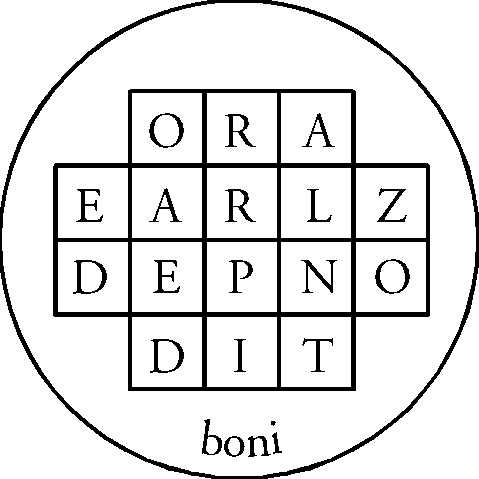

Copyright 1993 by Benjamin Rowe
Permission is granted to distribute this work in electronic form, with the these conditions:
1) No fees may be charged for the distribution or transmission of this document, other than standard charges for use of transmission lines or electronic media. Distribution for commercial purposes or by commercial entities is specifically prohibited.
2) All copies distributed must contain the complete, unedited text of the original document and this copyright notice.
3) Persons acquiring the electronic version of this document may make one printed copy for their personal use.
All other rights are retained by the author.
I had been in a disturbed mood for most of the day so far. It felt as if there was something I should be doing, but none of the ideas that came to me seemed correct. I was wandering around trying to figure out what was going on, when I had a flash of my temple of the Earth Tablet. The altars of the lesser angles were outside the temple, so that the "lotus" had formed around the temple, and one of the petals of the lotus could be seen to have a sigil on it. I sat down to record what I could see.
On each petal of the lotus was a sigil, and one immediately caught my eye. It appeared like a cursive capital "Y" with a couple of eyes or circles in the crook of the "Y".
I stood upon this sigil, and shortly I found my astral body split so that one portion remained on the sigil and another rose up a followed a beam of light arising therefrom.
Following the beam, I came to what first appeared to be a construct like Dr. Who's Tardis, and latterly like a somewhat distorted version of the Temple itself. This flattened out towards 2-dimensionality until it appeared as an arch with two narrow doors in its opening. I opened the doors and looked through.
Before me I saw a brilliant sun, a light lavender color, filling space around it with an equally-bright corona. I moved through the doors and closed them behind me.
There was a sense of cleanliness and freshness, like one feels after a good shower, to the atmosphere where I stood. I turned and looked at the gate, then rose up a bit and looked behind it. First I saw that there appeared to be a darker space beginning just beyond the gate and passing away beyond sight. From behind, the doors in the gate were not visible.
Then I turned back to the sun again, and looked more closely. At first there was nothing to see, as if the surface was covered by a uniform cloud. Then the sigil began to become visible, as if inscribed on the face of the sun. Looking more closely, the circles turned out to be convection cells, and the lines of the sigil appeared as rivers of substance flowing over the face of the star.
I continued to look, and out of the face of the sun rose a being. It was garbed in a dark lavender robe, hoodless and collarless, with skin a deep bronze or copper color. The hem of the robe was white, with small designs on it in the same gold color, and the being's hair was also white.
It stood with its hands above its head, palms together as if imitating a candle and flame. Keeping the palms together, it moved its hands to in front of its heart center, then swept them outwards, palms down until they were to either side of its body. It paused for a moment, then moved momentarily into the sign of Air, afterwards bringing its forearms upright and moving the arms forward until the upper arms described a 90-degree angle with the body. Palms forward, it held this pose for a few moments.
Then it dropped its arms and came towards me, saying, "Greetings, o mage. I am Kaph, aleph, lamed, samekh, teth, nun, samekh.1 I am the keeper of the gate to this place, and the representative of the powers here, which are of the nature of the sign of Uranus, planet of uncertainty. And yet the powers here are not as the powers of the planet in your solar system, for here is that power in its rightful place, fresh as you noticed, and free from the conflict of [diversion?] [ interaction with lesser beings?] [external orientation?]."
While the image did not fade, my sense of being connected with it faded at this point. I re-drew the sigil from the lotus, which seemed to provide some additional energy, but did not cause any other effect. I waited. I paused momentarily to close the curtains in my room, as the sunlight seemed to be distracting me. Then I returned to the vision.
The angel moved his body so that the torso was aligned with my own, and then gave some mental indication that I should match my posture to his. I did so, and we seemed to partially merge.
As we did so, I seemed to suddenly see the surrounding with his eyes. And what did I see? At first it was as if millions of tiny lights were rushing from place to place, not in a random fashion, but not in ranks or rows or other apparent order either. Then these lights coalesced into an image of the tree of life standing in the air before us, huge, yet far enough away that it could be seen whole. And this tree, which was my tree (Achad's) was still in itself, yet at the same time in perpetual motion. It defined motion yet did not move.
My attention was drawn to the path of Heh, connecting Tiphereth and Geburah. And in that path it seemed as if there was a second symbol hiding behind the image of the Emperor on his mountain top. I wanted to look closer but the angel told me to wait.
It seemed as if the Emperor had moved out of the way, and in his place there stood a centaur, facing to my left, its front hooves raised as if frozen in a moment of running. And this centaur did not hold a bow, as does the horse-man of Sagittarius, but instead held its hands in fists close by its sides.
We entered into the path, and moved about to a position in front of the centaur. From there I could see that his left eye held a baleful glare, and the right a more gentle radiance. And it was that second eye that was the star from which we had moved to this place, seen in a different fashion. And the glare from one eye and the gentleness from the other formed together into a rope, or more likely an umbilicus, two streams of power wrapped around one another. One large, the other smaller in circumference.
(I got the impression that these eyes were two stars, and that the umbilicus was actually the path of their mutual movement through the heavens. It was as if their movement left behind a residue, or a rope was being played out behind them.)
Now the angel spoke and said: "These stars are the stars of the Constellation Centaurus, the closest to the world of Earth save for a small, fast-moving star. Together they form one of the major contributions of energy to that which you know in your solar system as the sign, not the constellation, of Aries. And in them also is a different manifestation, that is, a manifestation in differing qualities but not differing essence, of that which is shown in your solar system through the planet Uranus. He is of great power, and greater significance in the future years than in the past. For he is the gateway and he is the opener, and he is also the destroyer of old forms and the maker of new. He is Shiva and he is Vishnu and he is Brahma in one, and only those who know him will move to this place and see the things to be seen here.
"You are not barred from this place, o mage, yet you are not of those who would see clearly here. For even though you are known of Uranus, and know him, so too is your task in another sort of manifestation of that force. The complex interactions of these stars are irrelevant to your work, and so you need not come to this place."
I asked him why, if this was the case, that the sigil of this particular gate was the first and only one to be visible in my temple.
"As for being first, these stars are close to the earth, in space-time, and so their resonance is somewhat stronger than others that are more relevant to your work. Look you, if these were not known to you, so then would they interfere in future explorations, and so it came to pass that those who guide your work would have you see them first."
"Now to continue, there are some others who will need to know of this place, and who will, in future days, find it through their own means, or through the use of your Temple magick. Remember, as the Earth is opened to the stars, so too will the powers of the stars become available more readily to those upon the Earth. And those who seek and find here will be among those who look for a more "scientific" system of magick, one wherein the myths and illusions of the past give way to knowing, and seeing with a clear eye. And they, in their own way, shall be one of the major contributors to the magick of the new age.
"For, despite the past declarations of the age's inauguration, it is not yet [there][here] in fullness. The energies of the ages passed are still present in your world to a greater extent than will be the case in a century or so, and when that time has come then there will be many things different in the practice of magick than in your own day."
"Now, we have found you to be a clear-headed and insightful viewer of these scenes, and would not like to send you away empty-handed, so to speak. And so look you:"
The images had faded gradually while I listened to the angel, and now I seemed to be standing in darkness. But the darkness had a faint glow of the same lavender color as before. And it seemed that out of the "corner" of my eye I could see a hand emerging from clouds, pointed towards the air in front of me. I could not turn and see the hand directly; it remained in the corner of my vision.
Directing my attention to the place to which the hand pointed, I saw what first appeared to be the same sigil as on the lotus and the star, but this time hanging in space. And there formed around it a circle, and the whole solidified into a golden-colored talisman. It turned in space, and on the back I saw a small diagram, squares as are shown in Dee's visions. I could not see it clearly at first, but there appeared to be letters upon the squares, English letters.
The first line, three letters, read ANO
The second line, five letters, read RAPSP
The third line, five letters, read ALION, save that the last letter appeared as if an "R" and an "N" had been drawn one over the other, having the same leftmost upright, and with the diagonal of the "N" passing through the tail of the "R"
The fourth line, three letters, read PRO
And the center letters of all the lines were aligned vertically. And there was a fifth line, not in squares but following the lower edge of the talisman, which read "bona".2
Now I held this talisman in my hands, and it seemed as if the airs of the place had been concentrated therein, and made into a solid form, so that it could be carried back with me to my temple and laid therein.
"Take this" said the angel, "and when you return to your temple, place it upon the floor, under the beam of the king, and see what occurs. And now it is time for you to leave this place."
We re-traced our path, going out of the path of Aries in the Tree, watching the Tree spiral away into the distance. I turned to the gate through which I had entered, opened the doors and move through it.
As I left, the angel said, "Good be upon you, and peace be upon you, and know that, as we stand here now, so shall we always stand for those who attempt the use of the sigil. Fare ye well."
I closed the doors of the gate one at a time, making certain they were fully latched, and then withdrew my awareness back to the temple, where I joined my consciousness to the part of my astral body waiting there. I looked up, and shortly the other part, carrying the talisman, came into view, finally merged with my present body, and left me holding the talisman.
I turned to the Temple and entered therein. The king's beam in the center was amazingly bright, much brighter than when I had left, and brighter than I had seen it in recent days.
I took the talisman and placed it on the floor under that beam. I watched as it first turned transparent, and then (still transparent) took on some of the lavender color that had been present throughout the vision. The talisman thinned, and then curved upwards into a bowl-like shape. This in turn extended itself upwards, the rim narrowing until it turned into an egg-shaped vessel with a circular mouth. The entire lower portion of the king's beam was enclosed within this vessel.
I waited and nothing happened for a while. Then the vessel began to distort, first at the bottom. stretching outwards to the limits of the floor of the lower temple, then upwards, expanding until it defined the cube-shaped limits of the lower temple, but still with a small circular hole underneath the kings beam. It still retained the lavender color, but this darkened and became first translucent, then opaque.
I waited some more. And waited. Within the vessel, the power of the beam seemed to roil like water pouring into a bottle, but none spilled out the top. I called upon the god-names of the temple, and the king's name. The brilliance of the beam increased, and suddenly the vessel lost its solidity, transforming instantly into an energetic form. All the power in the lower temple was a white brilliance mixed with lavender, so that it all seemed to be both white and lavender simultaneously. It still remained defined by the cubic shape of the lower temple, though nothing appeared to hold it there.
Nothing more seemed to happen, so I moved the altars of the angles back into the Temple proper, closing the lotus. I closed the temple and returned fully to my physical body.
In the few days following this I noted some unusual energetic phenomena around the Earth Tablet temple. I did not associate it with the talisman at the time, but on re-reading this consider that there is some sort of connection.
1) In the three days immediately following, the Temple appeared as if the petals of the Lotus were tightly wrapped around its form. Under normal circumstances, the petals are not visible at all until the altars are moved to their outside positions. They covered the entire Temple, but left an opening above the sphere of the Three Names, having about the same width as that sphere.
2) In the next two days, a very intense beam appeared to descend upon the Temple through the opening left by the petals. The first day it appeared to be homogeneous, with no fine detail visible. The second day, it could be seen that this beam was actually made up of very many thin bright threads, which I understood immediately were connections between the petals of the lotus and their equivalents or sources in the cosmos. Following the beam upwards, above the Earth's atmosphere it divided into its component threads, each of which went off in a different direction towards the stars.
3) The first week in January, the Temple changed shape, with the sphere of the Three Names opening up into a secondary lotus at the top of the temple. At the same time, the "normal" lotus appeared spontaneously around the Temple, much brighter and more solid than usual.
Early this morning, around 12:30 a.m., I tried to obtain another sigil from the Lotus. The sigil was as shown in the accompanying picture. It contained one large circle with an arrow pointing off to the left towards a small six-pointed star. Descending from the circle was a forked line like a curvy, upside down "Y". To the right and somewhat below the main circle was a smaller circle, to which was attached a line pointing back at the main circle. The whole was reminiscent of the stick-figure used as the logo of the old TV show called "The Saint".
I worked the sigil first by standing on the petal of the lotus on which it was inscribed. This was one of the innermost circle of petals, on the west side of the Temple, very close to the pillar for the Airy Lesser Angle. When I did this, the astral atmosphere around me immediately became filled with a lemon-yellow color. This was accompanied by a very intense smell and taste of lemons, much the strongest of any odor I have sensed in my astral body.
Nothing else happened, so I backed off and returned to the center of the Temple. I drew the sigil in the King's beam, thinking this might help to increase the power focused in it. But instead it seemed to lower the power. I erased the sigil and returned to the petal again.
This time, a beam of light ascended a short way away from the petal, up into the air to the west of the Temple. There, it formed (or at least ended at) a distorted image of the Temple's form, as in the vision accounted previously. But this one steadfastly maintained a 3-d form, refusing to collapse into a gate. It also seemed that I could not look at this form from any but a single angle, slightly above and to one side so that I saw most of the top and two sides of the form. Efforts to look at it from the side were strongly resisted. And while it appeared to have doors in the two visible sides, I could not open them, despite repeated efforts.
Today around 12:15 p.m. I again attempted to work the sigil. Again, the beam seemed to project a short way into the air above the Temple, where it was stopped by a closed gate. This time I attempted to force the gate open, grasping and pulling on its doors with a gesture much like the Rending of the Veil.
A horde of images seemed to explode from the sides of the gate. These were definitely images, not beings of some sort, as they were clearly two-dimensional and motionless. They appeared to be images of riders on horses in the act of charging, each holding a sword out before him in the classic pose of kitsch statuary. The images were all in very dark colors, only vaguely distinguishable from the darkness of the general astral background. Mostly they seemed to be a black or very dark brown, with occasional highlights in yellow and rust.
I backed off from the gate a bit to observe these images. As they moved out from the gate, they formed a circle in my direction. And within this circle a very bright, yellow glow appeared, within which was the sigil. I got the sense as if this circle was somehow a bowl, being held in the arms of a large shadowy figure, though again I could not see the figure clearly.
I called upon the names NANTA, MOR DIAL HCTGA, AND ICZHIHAL, but this did nothing to brighten or clarify the image. I tried testing the figure with the pentagram of earth. It remained shadowy, but in some way it seemed to add its force to that generated by the pentagram.
I heard a voice -- from whence I know not -- saying: "This is the bowl of SLDMQ,3 wherein are given all things that are of Her nature. Take of this liquid in your hands, and drink."
I went forward to the bowl, and stuck my hands and forearms into it, cupping the hands to take up some of the liquid. It glowed with a strong sense of "livingness" and I could feel the energy of it traveling up my arms. Raising my cupped hands, I sucked in some of the liquid. "Again," said the voice. I scooped up and drank some more. "And again," said the voice. I drank some more. "Wait," the voice said.
I waited, and there seemed to pass through the air a humming, too high to hear with the ears, but still barely perceptible through some sense. And then there came a note of perfect clarity, which seemed to be a single note of a chord whose remaining notes I could not hear, but which acted on me in some way. Meanwhile the glow of the liquid suffused my body, causing it to take on some of the yellow coloring of the bowl.
Suddenly it was as if the heavens had burst open, and I was standing in another place, far from the Temple. I saw before me a landscape, which it first appeared as if sections or strips had been sliced at right angles to my viewpoint, and the pieces stacked like sod. These sections presently straightened themselves out into their proper order to show the landscape complete.
I saw immediately below me a lush, jungle-like area, filled with tropical birds and wildlife. These birds flew about and in their flying described the sigil previously seen. Then I looked further away, and saw in the middle distance a temple, somewhat like an Aztec pyramid. Beyond the pyramid, the jungle turned into a gray, stony desert, and in the distance I could see a city of stone buildings, with mountains off to its left.
And the voice said "This is the realm of [unheard word -- several angelic names starting with "P" came into my mind, as it tried to match what was said, PHRA the strongest] an angel of the world of instantiation, of the Earth. And this angel is also the representative, the conveyance, of a power from beyond your solar system, one which is of an inner nature dissimilar to it, but having within the limits of your world a similar manifestation. Now let us go on, and see the rest of what is to be seen."
I turned, and to my left there was an angel, this one also garbed in a lemon-yellow robe. It had white hair, as did so many I had seen lately, and a complexion that cycled through a number of colors, yellow, gold, green, violet, and back again. I did the LVX signs, and it responded with the same signs.
The angel gestured, and again there appeared a gate in the air. This one was definitely two-dimensional, and had two doors in it, with the sigil of the petal inscribed thereon in gold. The gate rotated 180 degrees about its vertical axis, and from the other side it appeared to already be open. We passed through, and immediately were in a stellar system having three stars, one very large and of a blue-white color, a smaller yellow companion, and a third at some distance, visible only as a white point. I could sense that in physical space, the two former stars shared an axis of revolution, with the third one revolving around both of them.
Magically, it seemed that the small yellow star was the least of the three. It was in some way subject to the being who inhabited the larger star, and the two of them in turn were expressing a nature that had its origins and highest expression in the distant star.
The angel said "She who is SLDMQ is above all these, and her power infuses them. They express the nature that she designs, and in their passing and re-passing about each other do they spin out the myth of her days, the creation of her dream. See the image of her being, as you would see it in your worlds."
There appeared before me a very detailed picture of a woman. She had hair the color of the midnight sky, and her hair was wavy and unbound. Her face was narrow with a long nose, and she had calm, dark eyes that seemed to spear one with their attention. Upon her head she wore an intricate crown, with diamonds describing patterns upon a background of filigreed gold. The crown rose up in three points, and upon the centermost and highest was a cross, not a Christian cross, but one with thick, blocky arms. The other two I could only see from the side, but they too appeared to have crosses, save that the horizontal arms were tilted to that the backmost arms were lower than the frontmost.
She wore a gown of intricate design, all in dark blue, with the designs in a violet or purple color. The cloth was shot through with green threads that shimmered into visibility and vanished again. One got a sense that the violet designs were the actual cloth, like lace, and the blue was some sort of energy filling in the interstices to give the appearance of wholeness. Upon here feet she wore sandals, with straps that crossed over the tops of her feet and tied behind the ankles, with no straps at the back to hold them on.
The angel said, "Thus is she seen within the limits of human perception; for her true nature is such that it would not fit truly with what is seen in your world. She is a goddess most great, much greater in her own realm than is the Sol of your system in his. She governs as one who has been to the utmost reaches and returned, not as one who is still one the path. And yet, as with all, still she grows in stature as her work progresses through the ages.
"Now we have seen only a little of her realm, and must stop for now. If you return another time, now that you have had some contact, you will see much more. If you do wish to so do, then you should draw the sigil in the air, and while standing on her petal of the lotus within the Temple, pronounce this name which we have given for her, SLDMQ (he pronounced it Sa-el-de-me-Ka). Take you this."
He handed me a talisman on which the sigil we had seen was inscribed. And on the back were letters: ORI, DAATA, ARIFL, GEN, in the same positioning as the tablet of the previous sigil. And at the bottom of the sigil again, there was the word "boni" following the curve of the talisman's edge.
"Put this within the beam of the King when you return, and observe the results. Go now."
I turned to the gate and passed through it back to the area of jungle, and from there closed that gate. Finding the original gate I went through it back to my Temple, closed it behind me, and followed the beam back down to the petal of the lotus, from whence I stepped back into the Temple proper.
I laid the talisman in the beam and stepped back. Immediately its substance transformed into the shape of a nautilus shell, but in a deep blue color. At the same time its energy formed a sphere, also blue but with a white core, which moved upwards and downwards in the beam for a while before finally rising to the level of the ceiling. There it dispersed along the paths provided by the four crosses, and passed downwards again as a sheath of light around the pillars. These all took on a greater sense of solidity for a while. which faded gradually back to normal.
The shell remained for a while, and I got the sense that it was in some way getting hotter and hotter, though no change was visible. I waited a while, and still nothing more happened, so I picked up the shell and it immediately returned to its original shape. I put it aside in a storage dimension for later use and study.
Now it seemed to me that there was a presence about, though not the angel just seen. And this presence said to me to rise up and look at the temple from the outside. I did so, and was taken up and carried far up into the regions above the Earth. There the voice said:
"Now you are beginning to attain some small comprehension of the way in which these petals of the lotus can provide gates. Much more will be seen and understood as you work in this manner." It admonished me, though not in words, to do the work more often.
"And in the heavens you will see how these petals connect with the greater world within which the Earth has her being. Some of them, like the first, attach directly to stellar systems in the vicinity of the Sun. And others, like the second, go off into other realms, realms that are not part of the same physical universe in which your Sun is, though they are in a larger sense all part of the same universe.
These connections, on the level of the macrocosm, are hidden behind and within the elemental natures which are the outward manifestation of the system of Enoch. As was said at the beginning, when Dee inquired of the nature of the Tablets and Calls, they tie into everything. And everything therein is a gate, to realms close and realms far, and realms beyond the ability of man to contact. And even those are not all that is connected thereto."
"Do ye continue in this work, taking one or another sigil, or returning if you wish to one done before, and you will stimulate these connections into activity within the Earth's sphere, making her in truth a way-place, a meeting-point, a distribution point in the great network of interstellar traffic. She and ye, and the minds of men, all shall benefit therefrom.
"We are done, for now."
Again I returned to the Temple, caused the Lotus to close about it, and ended the session.
A sigil appeared to me during my evening working on 1/27. I memorized it but did not pursue it then or the next day in order that I might "cool off" a bit and let the energies of the Temple subside to a manageable level.
The sigil appear somewhat like a square-root symbol with the beginning horizontal extended.
I called up the temple and used the First Call and the Call of Earth, with the names NANTA, MOR DIAL HCTGA, ICZHIHAL to do a general energization of the temple. The petal with the sigil appeared in the innermost circle, just west of the pillar for the Lesser Angle of Earth.
I stood on the petal, drew the sigil in the air before me, and called upon the names again. Almost immediately I noted that the sigil had also appeared in the central beam of the Temple. And as I noticed this, I was drawn up a beam emanating from the petal, through a gate, and into another world. This occurred very fast and without effort.
I noted that I seemed to be separated from the space in which the Temple stood by a spherical boundary of some sort. I could still see into that space, but was clearly apart from it, and the space in which I stood had a distinctly different flavor to it. At an indefinite distance above, below, and to both side, the spherical boundary faded and was no longer visible, blending into the general airs of the space in which I stood.
Before me on the ground there was a treasure chest of the sort seen in old pirate movies. Brass-bound, made of teak or some other dark brown, dense wood, with a curved lid. Concentrating on it, I got flashes of a skull-and-crossbones, but this design was nowhere to be seen on the chest itself; it appeared rather to be in some auxiliary space connected with the chest.
Still concentrating on the chest, I noted that a sense of warmth emanated from it, seeming to strike or stimulate my heart center and spreading throughout my body from there. A very pleasant sensation, somewhat Venusian, like lazing about on a deserted tropical beach.
The air directed a thought at me, telling me to take up the chest and return with it to my Temple. I did so. Now I was standing on the petal again, holding the chest in my arms. I was told to move some distance away from the temple, but to remain in the same space with it.4
Doing so, I laid the chest down and opened it. A cloud of white smoke poured out of the chest. But as it rose a short distance above the chest, it took on colors that appeared hard, like slick-surfaced enamels.
My viewpoint split, and from the side this smoke formed a curving surface, rising from the ground behind the chest, curving towards the position where my first viewpoint stood. This surface was hard on the side facing me, but retained a backing of cloud-form.
Returning to my first viewpoint, this surface was seen to be made up of squares, each of a different color or shade. I counted ten squares across the top, twenty-two squares from top to bottom. Each square contained a symbol, most of which I could not see clearly. These were not letters, but more abstract symbols of some sort. Most were off-center in their squares. I spent some time trying to resolve the images on the squares, but was not successful. I did note that some squares were further subdivided, and that these smaller divisions sometimes contained numbers or letters. The whole was reminiscent of one of the Seven Tablets on Dee's Table of Invocation. I also noted that despite the apparent solidity, this panel also appeared to be a projection of some sort emanating from the chest, rather than having an independent existence.
Eventually, the panel slid down until it was again flat, lying on the ground beyond the chest, with its "vaporous" side uppermost. I moved around the chest to get a better look at it. From this side, the colors were not present, and the letters and images were all in black on white. Still could not see them clearly; they moved around or shimmered in some way when looked at steadily.
I waited a while and nothing more happened. I happened to glance over at my temple, and saw that the sigil was still present in the beam of the King. I saw the sigil with double-vision. It appeared to be in the temple, at some distance from my current position, but at the same time appeared to be close and directly in front of my eyes. Moving over to the Temple, I saw that it was indeed in two different places, the second one close to the panel now lying on the ground. There, it hovered in the air, surrounded by a shimmering blue aura.
Now it seemed as if something else rose up out of the chest, or was at least ready to rise. I continue to watch from close by the Temple.
I noted that the sigil near the panel had rotated itself, so that the circle was now at the top, and the whole gave the impression of being like the beginning of the Lightning Flash, but stopped short in Da'ath.
Shortly, there was a rumbling sound, though the ground did not shake, nor could I feel it in my body as one would with thunder. It did not have any localized origin.
The rumbling continued on for a while, sometimes getting louder, sometimes decreasing in intensity. I continued to wait. For a few moments it gave an impression of being the sound of vast armies marching, approaching me. The sound grew louder, reached a peak as if the army was all around me, and then faded. I got the impression that this army was coming from a long way away and was being attracted to the sigil and panel out on the plain. Though I could see nothing, it seemed as if these armies had marched onto the panel, and gone away into some other space.
I moved out from the Temple and as I did so an angel appeared to one side of it, holding in his hands a talisman. The talisman had the sigil upon it, but with the circle to the top. The angel turned it over and on the other side was a tablet with the words RET, DOLMA, ARCON, DOL -- beni. The "R" of ARCON appeared to be overlaid with an "L".
The angel gave me the talisman, and I "knew" that I should place it in the beam of the King. I did so, and as we watched, a great flame grew up out of it, to engulf the beam momentarily. Then the flame subsided. For a few moments, the beam appeared filled with tiny silver metallic fragments, and then these too disappeared.
I turned back to the angel, and he saluted me with a gesture much like that of the Tarot Trump called The Magician, hands held before him palms down, as if directing energy into a talisman, or directing the action of creatures upon a game board. I tested him with the pentagram of Earth, at which he grew larger and brighter. I did the LVX signs. He responded by doing the sign of Osiris Slain, then the sign of Osiris Risen. As he did the latter his human-like form disappeared, and the words (cross) - L V X - (cross) appeared in the air where he had been in glowing white letters. Shortly he re-formulated himself in human form, and came towards me, stopping a few feet away.
(I noted a desire to record his words in biblical English, but refrain for clarity. )
"Now you should know," he said, "That not all of the gates to be opened by this Temple are gates into the Earth. Some of those gates are for movement outwards of forces now residing here. It is one of these that has just passed, at your opening of the proper Temple gate. You may expect others to be seen in future explorations, though not many.
"This present case was something of an example, being done, being directed, in order that you might have a representative sample for your records should they be published.
"The dimension into which you moved at the beginning of this vision was, as you surmised, an "auxiliary" dimension, one closed and having no direct connection, a sort of "bubble" in astral space within which was stored the key to the release of that which shortly passed this place. The chest, as a symbol, is like a Solomon bottle, sealed so that those whose key was therein could not attain to it on their own. It must needs be that one other than themselves would open it, and release them from the bonds that held them in this world of Earth.
"The key itself was of course the panel or Tablet that appeared upon the opening of the chest, and those who passed moved through it as a gate into the place from whence they came to Earth originally. Now that its usefulness is passed, you should close the chest and it will fade." I closed the chest and saw the panel disappear, leaving only bare ground where it had been. The sigil in the air also faded at the same time. I turned again to the angel.
"Now ye should know that the talismans, the sigils and tables, that you have seen in these visions serve a dual purpose. First and foremost, their intended use is to transfer some of the energy gained in the vision back into your temples, so that the powers have a permanent link, and need not be invoked directly again to establish such a link. You will find that the cumulative effect of this, when you have done a number more of such explorations, will have consequences not presently seen, but of a beneficial nature.
"You are making connections between the Earth and the stars by your work, and this in time will have consequences far beyond what might be needed for yourself. This is a service you do, as it will be for any who follow in this path. You have said you will raise the Earth up to the Stars, and this you are doing. Fear not, worry not, the work is being done. You have had small glimpses of what this means in your meditation, but the whole is not yet to be seen with clear eyes. Continue, and it shall be seen in due course. Continue.
"The second use is, of course, for future invocations of the force or petal in question. Make a physical talisman or an astral talisman with these symbols and tables upon it, and wear it as a lamen when doing such invocations. Or alternatively, place it in the beam of the King."
"I am the angel Samek, Aleph, Daleth, Mem."5 He spoke these words, and then faded from view.
Now I looked around, and there appeared to be nothing more to do at the moment. The talisman still stood in the beam of the King. I picked it up, and noted that its original brassy coloring had changed to a lusterless silver, almost but not quite leaden. It had a heavy, lifeless feel, as if all the force had gone out of it. I got the sense that it should be disposed of rather than saved.
I took it out to where the chest and panel had been, and laid it on the ground. For a moment a shadow of those things re-appeared, and then faded again. And as they did so, the talisman faded as well, changing to dust as it did so and blending into the earth beneath it, leaving no trace behind.
The sigil in the King's beam still remained. This I erased with my hand, leaving the beam clean and free of any imposed force. As I did so, the petal of the lotus also lost its glow, and returned to the neutral state of the other petals around it.
I declared the vision closed, and returned fully to my body.
Even before I called up the temple, I got a vision of the sigil. What I saw was a tree with a thick trunk, and from the top of this trunk rose three fan-shaped groups of leaves. Each group had tips of green, centers of white, and bottom portions of black or very dark brown. The trunk itself radiated an aura of immense solidity and connectedness; one could feel the flow of life-force going unobstructed and without effort from its roots to its top.
Within the trunk of the tree was the image of some spheres connected together in a way unlike those of our own Tree of Life. These connections are as shown in the diagram.
I called up the Temple and created the Lotus. Then stood on the petal with the sigil and invoked it again. The sigil also showed itself at the same time in the King's beam. After a few moments I was again at the place where the Tree stood, without any passage or transition between; the change from one place to the other was instantaneous.
Now I looked at this Tree for a time. While I was doing so, an angel appeared to my right, and made the LVX signs without waiting to be asked. I tested him with the pentagrams of Earth and of Spirit, and he grew larger and engulfed both of them before returning to his original size.
The angel said: "This is a Tree of the place of the sigil you have invoked. It is a star-system of three stars, each of them of a higher order of evolution than Sol, each of them well on the path that will take them into the yet higher orders that stand beyond incarnation in the stellar realm. About that higher place we can not say a great deal; little enough of even that would be comprehensible to men."
"As you know, as the ages pass and the worlds within a solar system develop and evolve, certain "planes" of existence fall below the level of significance, each in turn becoming irrelevant to the work currently being done there. These planes embody principles so well built into the substance of the solar systems that it need not be developed or evolved further. These constitute the invisible "roots" of the Tree of Life being expressed in that system.
"Similarly, as this evolution goes on, certain other "planes" suddenly come into manifestation, so that there are always a certain number being worked at a given time. This number is not always the same; for your own system, there are always seven planes, for this one at which we look there are four or five, depending on how you choose to interpret the topmost paths, which pass out into another realm all together. The influences or spheres at the top ends of these paths are outside the work being done here, yet they continue to have some influence on events there, notably through the energy and stimulation they provide.
"Each of those top three paths leads to one of the stars, one of the circles within the sigil. And each of those by itself contains its own modes of working and defined area of creation. But together these stars have created an area of joint creation, wherein certain parts of their mutual schemes may be developed and manifested in concert. That area is what is expressed by this sigil and this Tree of Life before you.
"You will see, as you look closely, that the "planetary" natures of the spheres in this Tree, its stable emanations, are of an order higher than those of your own. They are all of a kind that is manifested in your system in Uranus, Saturn, and Neptune, those three planets whose relationship is greater towards the outer universe than it is towards the inwardness of the system. There is no personality in these spheres, no mundane realm, no ego or soul as you would know it. There is only cosmic substance and energy, passed beyond the need for focused, personal, expression."
"Now look closely at the Tree, beginning with the lowest sphere."
At first I saw nothing there. But after a while the sphere took on a shimmering almost-green color. Then out of it burst a bird-like being, which rose up over my head, came down and around behind me, and up beneath me so that I ended up sitting atop it. This bird reminded me in some way of Quetzalcoatl, the winged serpent of Aztec myth, though there was no physical resemblance between them. The bird's tail raised up and fanned out like a turkey's, so that I felt as if I were seated on a throne. The plumage changed color very rapidly, running through a great number of hues and shades from the blue-green-violet end of the spectrum.
Then it was as if I split from the being seated on the bird, as if I moved away leaving behind an image of a man. Turning back to look, I saw the man seated cross-legged on the back of the bird, naked save for a loincloth decorated with bird-like designs, and a headpiece of fanned-out feathers, which mimicked both the bird's tail and the fan-shaped leaves of the Tree. His posture was regal, and he held in his left hand something like the Tree itself, reduced to the size of a scepter. His hand was at shoulder height and slightly forward, as if in the act of wielding the scepter.
The angel said: "Unlike the Solar system, here the man-like beings are the lowest expression directly connected to the divine; that is, to the three stellar gods creating this area of work. And even though the image shows a man, they are not really man-like in the way the spirits of men are in your system. For where your Tiphereth is a central passage point between higher and lower, here this sphere, its nearest equivalent in the local system, is itself the lowest point. These kings never touch the elemental worlds; the powers coming down from above stop here, showing a perfect reflection of that from whence they came."6
The rest of the angel's words were lost, but I got an impression from him that filled it in. It is important to recognize that all the elements of this image must be taken together as an expression of the nature of the sphere. The bird is the sphere as basic energy, a reflection of its divine sources; because it flies, it never touches the elemental worlds, but is itself the endpoint of creation. The man shows that there is within this sphere an expression that appears to show individuality, but these "individuals" are all directly connected to the divine and are part of it, as shown by the headdress. And these individuals wield the power of the divine, as shown by the scepter. Here the Will of the divine (scepter) acts upon the substance of the divine (bird) through the divine Son, all of them within a single sphere, all of them separate and one at the same time.
I felt the energy of the vision weakening, and so I returned to the Temple. The angel followed after, saying: "I know that you are weary, but I would like to encourage you to look at least a couple more of these spheres before you quit for the day." I took a few moments to absorb some more energy from the Temple. Invoking the Names of God and the King, I returned to the lotus petal and got back in tune with it.
Returning to the place of the Tree, I willed the power of the bird-image to return to its sphere, and it did so. Next I concentrated on the sphere to the left in the row above. The circle of this sphere expanded into a window, through which I saw an old man, bearded and muscular like Odin, wearing a dark blue, almost violet, robe. The robe had no hood or collar. In his right hand he held upright a spear with a leaf-shaped blade bound to the shaft with silver wire. In his left hand, held down at his side, he held a square cap or hat, somewhat like those some Roman Catholic clergy wear.
The angel said, "Action in righteousness is the key to this sphere, for here are the Mercy and Severity one; action or will is combined, merged with the manifest pattern upon which action must be based, so that there is no question of morality or ethics, no separation between Thought and Deed. This sphere is easy to understand, as it is close to the two natures of your Chesed and Geburah. But always remember that this is a single sphere with a single nature, not a duality. If one should seek to understand it by holding those two in mind at the same time, then one will go amiss. See it in its own way, take its nature as it presents itself, and seek to merge with that nature to attain to true understanding of it. Now go on to the next sphere, which is not so simple."
I relaxed my attention to this sphere, and it returned to its original size in the image of the Tree, with its own image still shown inside it. I turned to the next sphere in the same level.
I concentrated on this sphere for a time, and saw little except a roiling of colors, as if it could not manifest itself within the limits of my perception. Then suddenly, exploding outwards from a point in the center of the sphere, a great mandala unfolded. This mandala had five great spokes or sections, and within each section were twenty lesser spokes. And each of these spokes was itself an entire world, seen edge-wise in some higher dimension. The center of the mandala was a black-filled circle, surrounded by a ring of lighter color, a powdery gray-blue.
"This is the focus of nature in this world," said the angel, "for herein are all things in touch with the center, and all patterns of activity derive directly therefrom. And the worlds within this mandala are the potential manifestations that are to be made real, in something resembling sequentiality, in that lowest sphere at which we first looked. Here they are arrayed in their relationships to each other, as they are in the minds of those who created this place. And the plan of their unfolding is held here as well. Each unfolds at the "same" time as the others, but each unfolds within its own, internal, sense of linearity and sequentiality and is separate in some sense from those that come "before" and "after" it in the rounds of the mandala."
Again I relaxed my attention, and the mandala retreated into the limits of its sphere. Looking to the next, to the left in the next row above, I concentrated again.
"This sphere" the angel said, "is the expression of one of the three stars that created this place. His expression within his own great sphere of working is here concentrated, summed up, sketched in miniature. Look ye to the west."
I turned around, assuming the Tree was in the East, and saw the star in question. It had sort of a maroon cast to its light. The color deepened, and there burst out of the star images of three armored kings, one coming directly towards me, the others moving out at angles to either side. And each of these kings stood astride three animals. The one coming towards me was astride three lions; the one on my left had three jaguars; the one on the right had three taurines of some sort, whose exact image changed from one species to another as I watched. And each of these animals had only a single leg centered at the back of their body, so they each stood upon three points.
Spoke the angel, "This great star is represented by three ministers within this area of mutual creation. And they, with their ministers, and their ministers' ministers, number thirty-nine, who are unity expressed in triplicity. And these act upon the five and twenty in such a way as to define their center, their point of contact with the divine."7
I felt there was more to be said, and waited. The angel continued:
"All of these are in their own way an expression of the original plan of this Tree of Life, as was shown in the way of their bursting forth from the center." [That is, the pattern in which they came forth resembled the three fans of leaves at the top of the Tree.] "And each of these three legs of the animals, these minister's ministers, controls in his turn the manifestation and organization of thirteen forces, so that within the worlds below there are three hundred and fifty-one major forces to be dealt with, each with its own expression, each with its own place within the pattern of the creation, each of which is the embodiment of a divine principle in activity. Add to these the original 39 and they become 390, giving a full manifestation of the original potential. Thus is the divine made manifest in this place."8
"Now look ye back to the next sphere."
The images of the kings returned to their place. I turned back to the Tree and looked at the next sphere in turn, on the right in the same level. I looked for a while and there gradually appeared a shadowy image, seeming to be in some way connected with the rightmost circle in the original sigil, as if that portion of the sigil had been clothed in an image. And the image was of a hooded monk, kneeling and hidden within his robes, contemplating an image in a sphere. He appeared to be facing a point about 45 degrees to my left. I could not see the image within the sphere he held, and moved closer.
In the process I entered into a merged with the monk in the image. Within the robes there seemed to be nothing but the barest outline of a body, a simple sketch, sufficient to hold the robes in their form, but little more. Looking at the sphere he held, the image within was of the old priest-warrior within the earlier sphere.
The angel said, "This one gives of himself directly into the lower world previously seen, and leaves little of himself in this level save a shadow. His manifestation in this place is of the nature of a channel for his original force, his true nature, which is reflected in miniature down into that lower sphere. But even in this there are secrets to be known, if one wishes to extend one's stay and concentrate on this one part of the Tree of this place. Now to the highest sphere."
I removed myself back to my "outside" viewpoint, and let the residual force from the last sphere dissipate from my body. Then I looked at the highest of the spheres in this Tree, and saw therein a little child, scarcely born, like Hoor-pa-krati without the forelock. He sat in a lotus position and held the thumb of his right hand to his lips. I saw him as from his left side.
Looking closer, I saw that held within the curled fingers of his right hand was a small talisman or coin, upon which was graven a figure that at one moment seemed much like the Sanskrit figure for the OM, and the next moment appeared to be an abstract glyph of a bird in flight.9
"This one, in his miniaturization into this area of creation, has taken on an image much like that of your Thelema, in that he is like a babe, silent in the womb, and yet forth from him comes all the power and activity manifested in the lower spheres. That king of the lowest sphere is to him much as Ra-Hoor-Khuit is to Hoor-Pa-Kraat. But in this case, they are not a dual manifestation of something greater, as those two are of Heru-Ra-Ha, but instead is the lower a direct reflection of the power of this sphere, only extended and also indirectly accessing some of the power of the other two stars, through their control on the lower worlds."
"He is the silence at the end of the OM, but in his silence is the bird brought forth into flight."
"Now I think we have seen enough for this time, and you should return again to your temple, waiting a moment for me."
I did so, and stood just outside the limits of the Temple's lotus while I waited for him. After a moment he also appeared, and said "My name is Kaph, Yod, Nun, Daleth, Teth, and in my nature I am a reflection of those thirty-nine whom ye saw in the fourth sphere of your vision.10 Thus I have a nature of sufficient generality to speak to you of the things shown and yet to be found within the compass of the Tree with which we have been dealing. I am in myself a symbol of that work, and am the link between that world, and this solar system of yours, which link was created by the resonance between the schemes of our two areas of creation. Now take ye this."
He handed me a talisman, as had the angels in the previous visions. This one showed the original sigil upon one face, with a couple of minor modifications (short "tails" sticking up from the rightmost curve). On the opposite side was the usual table, this one showing the words GEL, DALPA, FORTN, DES, with the word "boni" at the bottom.
"This one ye shall keep" he said, "and let it remain as a reminder and link into the place where we have been, for this contact is an important one within the many that can be exercised with the Temple you have built. It is through the paths from this place to that, and from that place to the places of the Three who created it, that one set of persons from your Earth would easily find their way into the larger universe, free forever of their ties to your world. This is one of the purposes for which this Temple was given, and it is one that shall be accomplished, without doubt or uncertainty."
I asked if I should place it in the beam of the King, as the others had bid me do. He said, "Do so."
I entered the Temple and put the talisman in its place, stepping back out afterwards. In a moment an image like the first I saw of the other Tree formed within the beam. And a sound like a wordless choir came forth, swelled, and diminished again. I saw that the image of the sigil in the beam was no longer there, and the sigil on the petal soon faded back to an inactive level. As it did so, the image of the Tree also gradually faded, or rather collapsed back into the talisman.
"And in this is the work done," said the angel, "and another link made in the Great Scheme of the Cosmos. Take ye the talisman, and save it in your storage place. And I am done."
The angel bowed his head for a moment, and then disappeared. I retrieved the talisman, stored it away, and closed the Temple for the day.
Obtained a sigil during use of the Temple last night, but did not feel time was right to explore it. Recording it here for later use. This one appeared at a point directly opposite around the circle from the one used in the 1/30/93 vision. As that one was the third one south of the pillar of the Airy Lesser Angle, so this one is the third north of the Fiery Lesser Angle.
Obtained this sigil last night during meditation on the Temple. It stood out quite prominently, and in some way called attention to itself. During the meditation I noted a sense that the circle at upper left represented a star or other stellar-level object being swept along on a shock-wave front, while the circle at lower right, and the lines connected to it, represent another star whose space is being impinged upon by the front. The large curved line is the front itself.
This sigil appear immediately to the north of the pillar for the fiery lesser angle, with only one more below it on the east side of the temple. It was immediately to the south of the one shown in the entry for 1/31/93.
I called up the temple and stood in the King's beam. Invoked with the First Call and the Call of Earth, and the names NANTA, MOR DIAL HCTGA, ICZHIHAL. The response was very strong, and the temple formulated itself around me in the physical world as well as the astral.
Upon my first thought of it, the sigil appeared in the beam, and my viewpoint went to the petal upon which the sigil is inscribed. Standing upon that petal, I was surrounded in a column of energy sweeping upwards out of the petal, engulfing me as if I was standing in the center of a flame. When the flame died down again, I found myself in space above the earth. Looking back at it, I could see the location upon the surface where my temple resided. It was a very small, sharp point in a dark color surrounded by a large group of petals like a cinquefoil, except that there were six leaves instead of five. Not like the usual chakra wheel that I see around it from a distance.
A voice said, "Now look outwards." I did so, and saw another planet sweeping about in an orbit, around the sun, but very close to the Earth in space. This planet did not seem to be made of physical matter, but of some other substance. As I watched, it moved inwards, crossing the orbit of the Earth, and moving on. When it passed the Earth, I could see something like the shock-wave sensed from the sigil sweep over the Earth, putting a pressure on the Earth's aura or magnetic field that had not been there before. The pressure reached a peak and dwindled again as the planet passed on.
An angel appeared beside me, and did the LVX signs without prompting, then the sign of Earth. Testing with the pentagram of Earth had no effect on him. Testing with the pentagram of spirit caused him to grow in size for a few moments.
The angel said, "Not all of the influences affecting the earth come from far away. Some are as close as its own back yard, and figure in the activities upon your world as a regular, cyclic influence. This one is a planet in the process of formation, not in the matter of the physical world, but in the matter of the so-called "etheric" level, halfway between the dense physical realm and the realm of the astral. It is the same substance out of which your own energy-body is made.
"When this planet passes, as you have seen, there is a pressure put upon the aura of the Earth, and certain aspects, certain objects and substances within it, are brought to a state of stimulation. Most of these substances are of a low kind, the sort that causes depression, and a sense of living in an emotional miasma; they produce feelings of worthlessness and hopelessness in a portion of the human population, and cause such people to become less active, more inclined to let things go, less inclined to keep up with the work necessary to living. Along with some other influences, it causes a regular cycle of such feelings, which can be noted but not explained by the mental health workers of your world.
"Now this is not necessarily bad, because even as this planet stimulates these negative manifestations, it is at the same time raising the substance involved to a higher level, making it more active, changing its nature so that it no longer expresses the deep, dark nature which it originally possessed. In these times the effect is seen to be more common because there are more people to feel it, and so it becomes more apparent as a phenomena. But in fact the cyclic stimulation has had an effect over the millennia, and the intensity of the effect now is much less than it was even a few centuries ago.
"In the larger view, this action by the passing planet contributes to the education and initiation of the world, because its action breaks up the forms that it stimulates, lets the substance that was trapped in those forms release to be incorporated in better, more useful, more advanced structures. Now look ye to the planet itself, and see what you might see."
I turned and followed the planet along its course, rapidly catching up to it. It appeared to be very dark despite the fact that, not being physical, it could not cast a shadow. It appeared that energy hitting it from the sun was absorbed or concentrated somewhere inside, converted into a different form and released again as the darkness that I saw.
Coming closer, it appeared that the darkness was really a shell surrounding the outside of the planet, and within that shell there was a lighter, more energetic form of substance. And in the center of that substance was a dark point, where an immense amount of energy was concentrated and not released. The whole appeared to resemble, in a 3-d form, what I had earlier seen surrounding the Temple. The "light" portions within the shell were sectionalized in some way; the sections had softly curved edges and corners, much like the way sections of a grapefruit or orange would appear if the rind and all the connecting structures between them had been removed. But the sections themselves were laid out like a dodecahedron or some other high-order geometric solid rather than being radially symmetrical like a fruit.
Moving in towards the dark center, I saw that within it, there was a tremendous amount of activity taking place. Geometric constructions formed and disappeared so rapidly that I could not see them clearly, and there appeared to be many millions of them existing at once.
The angel said, "For the present, all of the deliberate work of this planet's incarnate intelligence is being restricted to this small central section, which is really a reflection of his concentrated point of attention, on a much higher plane of the solar system. He is not concerned now with the outwards expression of his design, but with the first instantiation, the setting of the initial pattern out of which all the growth and development in his sphere will eventually come. The sectional appearance of the more outward portions, and the dark shell that surrounds the whole, are both automatic, not consciously-created, effects of his work. They are secondary and ultimately inconsequential spin-offs of this central activity. And even though their effect on the outward surround is significant at this time, in the end the planet's true nature will be other than what it now appears to be. Speaking cabalistically, this god is still in the involutionary phase of his creation and these outward effects are shells that will be discarded when the moment of anchoring on the physical plane has been reached.
"Now this, while a powerful effect in the local system, is far from being the most significant of the effects reaching the Earth. We will see many more coming from the outer stars than we will within this solar system, and most of those will be of greater long-term importance than this little cousin of our Earth.
"I would say that we have seen enough here, and should retire back to your temple."
I did so, and in short moments the angel caught up with me. As with the previous visions, he handed me a talisman. But this one did not contain the sigil used to start this vision. Rather, it showed the one previously seen but not used, with the two crossed lines descending from the circles. On the back were the usual letters in a table, this time reading ORA, EARLZ, DEPNO, DIT. The "T" of DIT had a line running crosswise from the right end of the crosspiece to the lower left, and then horizontally back to the right, as if the letter were actually a "T" and a "Z" combined. The "E" of EARLZ looked more like a "C" with a small crossbar than a regular "E". At the bottom, again as usual, was the word "boni".
"Now the only reason why you were not able to do the sigil previously seen was due to the effects of this one we have just studied, which was a temporary effect. After the planet has passed further on, that petal of the lotus will be taken over by another sigil, and a different force, and so we do not need to have a sigil-and-table talisman for it. As you have remarked in your mind, what is seen upon the petals of the lotus depends in part on the nature of the Temple, in part upon the natures of the magician, and in part upon the current activity in the cosmos as it impinges upon the Earth. Some permanent influences can be momentarily over-ridden by stronger but passing influences, and such has been the case here. I would suggest that when next you do a vision of the Temple's lotus petals, that you begin by creating an image of that older sigil, and exploring what you see with it. Hold this talisman until that time, and use it then."
I said I would, and the angel departed, taking with him the image of the current sigil and all the energies I had seen associated with it. After a few moments, I closed the temple and returned fully to my body.

I had been putting off going back to try the sigil previously seen, but not used. For some reason, there was a sense that the power in it was more than I wanted to deal with at the moment, and I had put several days into working on the new version of the Temples book instead. Tonight I entered the Temple of Earth, retrieved the talisman with that sigil from storage, and began a first try to see where it leads.

When I first looked at the talisman in my hands, it had the side with the table upwards. It seemed to me that this table was not made of four words read across, but of four words read downwards; the fourth word combined the two letters in the leftmost column with the two from the rightmost column. This final word in some way bound the other three together.
Turning the talisman over, I studied the sigil until it was fresh in my mind, and then laid the talisman on the floor of the Temple under the King's beam. The interior of the Temple became instantly brighter, and the petal containing the sigil stood out dramatically from those around it. I moved to stand on the petal.
It seemed as if a powerful beam rose up from the petal, gaining a height about twice that of the Temple before curving to horizontal and moving far off into the southeast. I sensed a power building around me, and my vision was filled with a cream color tinged with canary yellow. I rose up and followed the beam, quickly leaving the vicinity of the Temple behind. The beam passed through an area where space constricted around it into a cylinder with flared ends. At the far end of the cylinder, the beam ended at a gate.
The gate had two doors of thick wood, between side-beams made of stone. The doors had semicircular tops, and were underneath a triangular top-piece or overhang. The sigil was inscribed in the center where the two doors met, save that this version of the sigil had a third circle, somewhat larger than the other two and positioned above and between them.
I willed the doors to open. As they did so, a blindingly brilliant light sprang out from behind them and I felt the radiance as a force sleeting through my astral body. As I became accustomed to the light, I saw that it came from a Tree like the Tree of Life, but three-dimensional like Achad's speculations. Every sphere of this Tree was a jewel, and every path a semiprecious stone carved into a cylinder with an hexagonal cross-section.
My body moved forward and became one with this Tree; its topmost sphere conjoined with my top-of-head chakra, it's lowest sphere touching the inside edges of my feet, the remaining spheres either spaced along the spinal cord or in equilateral triangles centered on it.
I counted five spheres on the central column, but could not place the fifth one. It was definitely not in the position of Da'ath. I could count the spheres individually from either top or bottom, and each time would count five of them. But when I looked at the Tree as a whole, I could only see four. The fifth seemed to be off in another dimension somehow from the rest of the Tree, but its position in the sequence was between the equivalents of Yesod and Malkuth, so that there was a geometric progression in the distances between the Spheres on the column, each twice the one before.
Something told me to step away from the Tree and return through the doors. I did so, and found an angel waiting there. He closed the doors and turned to face me, making first the sign of Fire, then the sign of Set or Earth. I returned these, and tested him with the pentagram of Earth, which caused him to glow more brightly against the background. Then with the pentagrams of spirit, which reduced his brightness. Then with the pentagram of Fire, which again brightened his appearance. I gathered from this that his nature was basically of earth and fire.
He said, "Hail o mage! Hail unto thee from we who are in this place called guardians and gatekeepers. Here we stand between the Earth and the heavens, and watch that only those who are qualified may enter herein. For every gate has its key, but not every key-holder is worthy; some must be turned back from every gate of the Temples even if they are welcomed at others.
"But that is not of your concern here, for truly you qualify to enter into this place, for it was here that you entered into the Solar system in the beginning, so many aeons ago, and it is here that you may find one of your many ways to leave again when the time comes. Truly there is much for you to see in this place beyond the gates, and many trips or visits will be necessary to gather even a small bit of what is here, and yours by right.
"For the present, we would advise that you spend some time simply identifying your body with the Tree therein, familiarizing it with the energies of that place and enabling your senses to gradually see therein with clarity.
"When you come, use the talisman as you have seen it, without the third circle, and with the table of names upon the back. Call upon these names as you have said, taking them in columns from top to bottom and using the surrounding name last."
I said that I would do this, and asked what more was to be done at the moment.
He said, "Little at the moment. But in your meditations later tonight, return and spend a while conjoined with the Tree, not trying to interpret it, or to see it clearly, for its true glory will open to you gradually and only after many days. Simply stand, and absorb, and encourage your bodies to adapt."
"Now I am Kaph Peh Tav He Resh, the keeper of this gate, and my name is in the glory of the Tree. Fare well." He did the signs of LVX, and of the closing of the veil, and left my vision.11
I turned and followed the beam back to the Temple. I took up the talisman and returned it to its place of storage. (I had to step outside the Temple to do so -- inside it glowed too fiercely.) Returning to the Temple I sought to work the residual force of the talisman into the fabric of the Temple. Eventually I did so, and the Temple returned to a quiescent state. I closed it and returned fully to my body.
I began by taking the talisman of the previous vision and placing it in the King's beam. A great fire welled up therefrom, rising above the Temple and arcing over into the southeast. I followed this trail of fire and it ended at a double door with the sigil shown, but with the additional circle shown above and between the two circles seen originally.
The three-dimensional Tree of Life seen before was still in position, but this time rather than filling my entire vision, it appeared in a context. It was surrounded by a haze or glowing area, well-defined, within which its power seemed to be paramount, but outside this area was the black of space, and in it I saw three bodies, presumably stars. Two of them, one very large and the other much smaller, orbited around each other. A third orbited around their common center at a distance, so that it appeared to be outside the area of mutual influence of the first two. The gate stood in space behind me and as I watched its doors closed.
I waited, and an angel appeared and did the LVX signs, then the signs of Set and the sign of Water. I returned these signs and felt the urge to do the sign of Fire as well. The angel also returned this sign without difficulty. I tested him with the pentagram of Earth, which caused a flow of force to come into being between us. He remained steady when I did the pentagram of Fire, and the pentagram of Water.
He said, "I am not the same angel you saw before, for he is the gatekeeper, and I am here to present some more to you of what lies beyond the gate. You may take my sign to be Kaph, Lamed, Daleth, Pe, He, for this is the nature I am enacting at this time.12
"Now in the prior vision of this place, you were told that this path was the passage by which you entered into the Earth's sphere, and this was correctly said. This is the sphere from which you came into the Solar system, and by which you will first leave the system again in the proper moment of time. At present we are on the edge of that leave-taking, but in earthly time this will be some time in the future, for time there runs more slowly than here, save when there is a connection made as in the present moment.
"Now the Earth has many connections in the starry realms, for she came from those realms and retains contact with all with whom she worked in prior cycles of existence. Further connections are made through resonance of natures, others through her working connections with the planets and other spheres within the solar system. All of these connections, and many others, will be found within the lotuses of the Temples by those whose nature allows them to see.
"We have shown you many of these connections and will show you more as you work, but for the moment I want to consider that which lies before us."
The angel gestured first to the star-system in which we stood, and then to the Tree of Life in its aura.

"This tree is single, an expression of the combined force of the three stars you see, for they are not separate individuals, as in the previous instance which you made public, but are in fact three manifestations of a single being, who expresses through the participation of three lesser gods, each of whom runs one of these solar bodies under his direction. And this primary god also participates directly in the action of the largest of these stars, who is Sirius in your mythology, and [unspeakable word] in his own."
I tried to get an impression of what was meant by the work I could not hear. It seemed to have something to do with this god being a "Triple-tiered god", one who expressed himself in three different levels at the same time. More than that I could not get.
My attention was then directed back to the Tree, and I noted that when I examined it before, I felt that there was an additional level between Yesod and Malkuth. Now I could see that this was so. I one were to look at the Tree from a position perpendicular to one face, so that the third dimension was hidden, then this Tree would appear to be formed to that it was made of two hexagrams, which shared a single sphere in common. The upper hexagram had no sphere in its center, like our own Tree, but the lower had the equivalent of Yesod in its center, so that there was a second focus of personality, a second "soul" as it were, below Tiphereth. There were eight levels in all to this Tree, as ours has seven.
"Yesod-equivalent, by the addition of the two extra spheres below it, has taken on the character of genuine godhood; it is as much a manifestation of the divine in this system as Tiphereth is a manifestation of the divine in your own. And the Tiphereth-equivalent here is still divine as always, though its nature is changed slightly because of the variation in the relationships being expressed here. In your own system Yesod is not a divine principle, but merely a shadow; it has no power of its own, but takes power, such as it receives, from those above it in the Tree. It is deliberately considered, for purposes of action in your Solar system, to be "below" the lowest level of divine manifestation, as are the spheres of Netzach, Hod, and Malkuth. They are shells, only enlivened by the souls of the entities who embody themselves in their substance; the divine does not directly enliven them as here.
"Since this system is superior to your own, above it in the hierarchy of development, it has an additional level over those expressed in your system. Thus it is eight as yours is seven. Thus also is the mystery of why the sacred number of the Christ is considered to be eight, and why the path of the Buddha is eight-fold. Neither of these mysteries refers to your eighth sephira Hod, but rather to a connection between those paths and this system. Each liberates by going beyond that which is "natural" to your solar system, bringing in the power of this greater system to do the work of freeing man. And so do you, in your way, by your coming from this sphere to the earth, and by your creating of an affirmative link with it through these experiments.
"There are many others who can travel this path, and the others you will and have found in this exploration. And so they will in their own time, when you publish this travelogue of the stars. For the talismans and sigils given to you here are not for yourself alone, but also for any others who might chose to use them. Once you have made the links, and have been given the talisman of a particular path, then others can connect with that path simply by using the talisman. The building of a Temple is not necessary, for the path is created and established; only those who seek to create new paths to the stars, out of their own natures and those of the Temples, will need to create a Temple of their own for such travel.
"We asked you to return once more to this place before going on with the other new sigils you have seen, primarily so that you could assure yourself that you had seen the Tree of this place aright, as you now have done so. By seeing the Tree correctly, you affirm that you have absorbed (rather, re-absorbed) the energies of this place in their proper form and fashion, and that the link therewith is complete and without missing powers. We had no intention of taking you farther into this realm, nor of requiring you to penetrate deeply at this time. In truth it is preferable that you continue on and make links with many other spheres, so that the powers of travel will be opened to the people of earth.
"Rest ye, and when your rest is done, make note of what you have seen here.
"I have done."
The angel bowed, and went away in some direction I could not follow. I turned to the gate, which again swung open, and returned through it to the Temple. There I picked up the talisman and stored it away. The flames died, and the Temple was quiescent again. I ended the vision.
Further notes: In the first vision of this place, I had had the sense that there was a fifth sephira on the middle pillar of this Tree, lying somewhere between Yesod and Malkuth. But I could not see it; it seemed to be off in some other dimension. After this second vision, I conclude that I simply could not see the powers of that level clearly, and had mistaken the twofold power of the two sephiroth on that level for a single power. Thus I could not see it because I had been looking in the wrong place. (Note also that the paths shown may not be entirely correct.)
Also, in the moment I saw the Tree clearly, I also had a comprehension of how it related to the human body. The topmost sphere related to the top of the head. The next two spheres to the eyes. The two after that to the shoulders, and the Tiphereth-equivalent to the heart. The following two were at the top of the hipbones, and the Yesod-equivalent was congruent with the sexual organs. The two additional spheres between Yesod and Malkuth related to the thighs (not the knees), and Malkuth was centered between the feet.
This sigil gives me a sense of leaping joy even without any special invocation. It's position in the Lotus is immediately to clockwise of a line drawn from the center of the Temple to the center of the pillar in the water angle. The left side of the petal abuts this line.
I spent some time standing in the King's beam, absorbing energy and attuning myself to the astral space again. Then I turned and move out to the petal, standing on it and looking outwards from the temple. I sensed that behind me the sigil had also appeared in the King's beam.
Energy rose up from the petal and engulfed me, a cool sensation and an equally cool white color. It seemed as if I was becoming one with the sigil in some way, the circle my head, the connected line the front of my body, and the other line leaping out before me. But there was no urge to movement and nothing else appeared to happen.
I turned and looked into the Temple, and saw an angel standing there. He moved out of the Temple along a line towards me, stopped outside and turned to face me. His hands were held in the sign of Water, and there seemed to be invisible extensions of this triangle going upwards to the tops of his folded wings. He projected a peaceful sensation, having the same cool calm as the light from the petal.
I did the LVX signs and he returned them, then he did the sign of water again, which I returned, and the sign of Earth. I tested him with the pentagrams of spirit and Earth, which did not produce any significant change in his size or appearance. The pentagram of Water caused him to become brighter, and the aura surrounding him to become clearer. I asked him what's up.
"O mage," he said, "the time of tides is upon us, and in this place and time are the powers of god mighty, and moving. Let us move away from the Temple somewhat, so that we might speak without interference."
I indicated that he should move to an appropriate place in the surrounding area, and I would follow. He moved out into the northeast quadrant and stopped at a distance of several hundred yards. I moved to follow him, and when I reached him he gestured back to the Temple and told me to watch. I noted that power continued to rise from the petal in my absence, and that there appeared to be a larger, shadowy version of the sigil forming in the air above the Temple, anchored at the place where the King's beam fell on the floor.
The angel said to wait for a while longer, and we did so.
Then the large shadow sigil moved so that its lower point was on the petal, and at the same time a number of curved lines began to form around the Temple. These began at a point just above the sphere of the Three Names of God, and curved outwards and downwards, intersecting the ground at the point where the Seniors' curtain touched the ground. I got a sense that these lines continued into the ground to meet again at a point below the Temple.
I said these things were lines, but they were actually much more than simple lines, having a very complex structure. Each appeared to have a thick core of dark brown or black, around which additional thick lines of a very deep green color were wrapped helically. They reminded me very much of the windings in an electric motor or generator. As I watched, they appeared to become more solid, and a field of force in a brighter green color formed between them, so that looking through it was like looking through a thick colored glass. I moved around the Temple counting these lines, and found that there were seven on each side, fourteen in all.
Moving back to the angel, I asked what was happening, and he again indicated that I should wait and watch. I noted that a very bright beam of light descended on the point where these lines met, and continued on into the Temple to become one with the King's beam. Nothing else happened for a while.
Then the angel said "Now look." As I watched, circles of light moved upwards on the spherical force field between the windings. It seemed as if the color in the field was being concentrated in these circles, leaving the intervening space white. Each circle reached a higher point before fading out.
The circles followed one after another, faster and faster until they could no longer be distinguished individually and the entire sphere took on a flickering appearance.
Now it appeared that a huge dome or sphere was forming around the Temple at a great distance. I could see it covering the sky above, descending to enclose us and the Temple within it. It seemed to be many miles in diameter. This great sphere became ever more solid, until even at this distance I got a sense of great weight and impenetrability. The angel took me by the arm and moved us back yet again, until we were very close to this outer sphere.
A few bolts of lightning passed between the inner and outer spheres, but there was no sound or vibration. A sense of great and increasing tension filled the air.
A few more minutes of increasing tension, then it reached an intensity where all of space felt as if it were warping. Suddenly out of the central sphere a great flow of force came forth, and at the same time I sensed a will reaching inwards from outside the greater sphere, taking hold of that force and moving it. And it formed into a huge duplicate of the Temple, made entirely out of energy, as big as it could be and still fit within the outer sphere. I felt dwarfed by it. The original Temple and its surrounding sphere were lost from sight somewhere within this structure.
Now there was the sensation of a great bell ringing, felt with the body but not with the ears. It rang out again and again, and as it did so hundreds, thousands of angels appeared and moved into this great temple. The angel beside me took my hand and we moved at his direction along with the others.
Closer I noted some differences. There were vaults or arches running between the pillars, so that each side was like a great open doorway. The Seniors' curtain was pushed aside so that it made a sort of extension or shelter just outside these openings, and in the same shape. Inside, the ceiling of the lower temple could not be seen; it appeared lost behind a constantly-shifting pattern of light.
The beam descending in the center of the Temple could now be seen, and where it touched the floor the original Temple and its surrounding sphere lay like a child's toy in a coliseum, totally dwarfed by the structure. Each square of the floor contained an image, as if looking into different worlds. And the pillars also had constantly shifting images, as if each slight movement brought a new world into view within them. I also noted that the angels entering the Temple did not fill it, but instead merged themselves into its structure.
Now the angel with me told me that we should move back to the center where the original Temple stood. We did so, and entered into it, passing between the surrounding lines. It was entirely engulfed within the King's beam of the greater Temple, but none of that power seemed to enter in here.
(This entire vision seems to be moving in slow motion, with long waits between short periods of activity. Another such wait at this point.)
While waiting I looked around my own temple, and noted some changes. The pillars in particular were of a lighter color, and had taken on the texture of fine polished granite. The floor was white marble, and the ceiling of the lower temple, with it's embedded crosses, now appeared to be made of obsidian. A small hole in the ceiling let in the King's beam, which was unchanged. The curtain of the Seniors was still there, but had lost its liquid appearance and become like a fine loosely-woven cloth, translucent, nearly transparent. On the floor, a small metallic-appearing cup enclosed the end of the King's beam.
Now the coiled lines surrounding my Temple began to rotate around it counterclockwise. Looking between the lines, I saw that we were rising up from the floor of the larger temple.
The angel turned to me and said, "Up to this point, all has been preparation. Now the vision begins in earnest. See ye what there is to be seen as we rise up."
Looking out, I saw a series of landscapes, all going by too fast to make note of details. For some reason this reminded me of the descriptions of cross-time travel in H. Beam Piper's "Lord Kalvan" stories. I caught glimpses of strangely-shaped buildings, most of which could not have been built in the real world, for structural reasons. Each of these, I sensed, was a gate between worlds. Yet all these worlds were within the confines of the Great Temple.
Now we approached the ceiling of the Great Temple, and passed through a hole in it. Beyond at first there appeared only darkness. Gradually another landscape appeared and did not change. Within this landscape were six temples, unlike my own in shape, which were arrayed in a hexagram around the beam in which we rode.
As we moved upwards I felt as if I was having more and more difficulty maintaining the vision. I kept having to slough off astral bodies as they became too gross to withstand the forces present, and each new one of finer nature that I took on was harder to keep.
Eventually we passed out of this scene and entered into the column of the King's name, wherein the beam that shines on the lower Temple is formulated out of the stuff of God. Nothing surrounded us that we could see past the brilliance in which we were enclosed.
Continued rising brought out to where the sphere of the Three Names of God should be. But here it was a fully-opened lotus, as sometimes appears in my Temple when the forces are invoked with particular strength.
Now we were back in "normal" space, just underneath the height of the great sphere enclosing this Great Temple, but still I was having difficulty maintaining the astral body and through it the vision. The angel indicated that we should leave my temple at this point and again move off to some little distance.
Underneath us the roof of the Great Temple was a huge expanse, a circus Big Top build for the gods. The ribs of the roof (which are the Seniors' names) were clearly visible, and between them a web-work of power covered over what was below.
I thought that this was all very fine, but what did it have to do with the sigil that started all this? These impressive events didn't seem to have any point.
The angel who had brought me to this point had disappeared. Looking downwards, I saw him heading towards the roof of the Great Temple, and as he came into contact with it, he dissolved into its structure as had those others seen earlier.
My own Temple still hovered over the lotus at the top of the Great Temple, within its enclosing lines.
When nothing more happened after several minutes, I decided that nothing more was going to happen any time soon. I was getting tired, and thought that I should end the vision regardless of its unresolved condition. I entered my Temple and tried to will it to return down the beam, but it did not move. Finally I decided to just leave things as they were, quit the vision, and go get dinner.
After the unresolved vision above, I decided to let things go for a few days to see if the Temple and environs would return to normal on their own. Last night I visited the Temple and found that conditions were substantially the same as at the end of the previous vision. My temple was still stuck on the outside of the great sphere like a tiny Mandelbrot bay on the edge of the Mandelbrot ocean.
I groped around for a bit trying to get things to change. Finally, I asked that the angels making up the Great Temple leave, depositing as much of their energy into my own Temple as it could hold, and returning the rest to the environment.
When I asked this, there was a great exodus of angels, who flew up out of the dome exiting in a circle around the place where my temple was attached to the dome. As they did so, the dome collapsed. But the Great Temple within it did not. Instead it attached itself to my temple, so that my temple was positioned where the column of the King meets the wheel of the Seniors in the larger temple. Beyond that, nothing more happened.
It occurred to me that perhaps I was not able to see the energies involved in this vision properly, and that this was the cause of the apparent "freezing" of conditions. I attempted to unite myself with the energies of the Great Temple, to become at one with them and perceive them at a level preceding words or images.
After some time of silent contemplation of conditions there, I noted that my left brain and right brain seemed to be perceiving entirely different conditions. I can not describe them except to say that the right brain saw a diffuse region of yellow, almost two-dimensional, while the left brain saw a region of deep blues and greens, very deep and three-dimensional. (That description is wholly inadequate, but it is the best I can do.)
I also noted that my aura and etheric body had become much brighter, and that the chakras were much clearer and more defined than is usually the case.
As I absorbed the forces and became slightly more accustomed to them, my temple gradually sank down within the Great Temple. It never reached the ground level, but stayed somewhere in the mid-space of the lower room of the Great Temple.
As I write this at 1:27 pm, I am about to try invoking the sigil again, to see if I can get any additional information about this state of things.
Standing in the Temple, I drew the sigil in the King's beam, and at the same time saw that the petal on which the sigil is drawn was flaring in brilliant light over by the pillar of the Watery Lesser Angle. As before, a great flood of light welled up from the petal.
I moved over and stood on the petal, looking back towards the center of the Temple. Therein there appeared an angel dressed in a robe made from every color of light imaginable; each thread was visible and each thread glowed and flashed with a single color. The overall effect was quite beautiful. The angel had long brown hair, cut off the forehead in front, and draped down behind the ears on each side. His eyes were a lovely blue color, like a Caribbean ocean on a sunny day.
He drew his arms down and away from his body to form an upright triangle, in a sign I have been told in the past was a sign of benediction. I returned the sign and several things happened at once.
First, I felt the flood of light from the petal lifting me up, and the sensation was much like that experienced in the occasional dreams where I fly by projecting some sort of force from my hands. It was as if I were somehow pushing against the flood and it was pushing back.
Second, the angel gave me the LVX signs and expected me to return them, which I did.
And as this was happening there was a great voice in the distance calling unintelligible words, which sounded vaguely Arabic, with many vowel and "L" sounds. The speech faded and cut off as the angel spoke.
"The voice you hear is the voice of the creatures of the Temple, singing the praises of their creator in the language of their being, which is the language of the creation of the world.
"This great Temple you have seen before, and these sounds you have heard before, in the days when first you found the building of the Temple of the Tablets, and made one for men. Then you saw little, save for the entry of the angels into it; now you see its fullness of structure, but not yet the full light which surrounds and pervades its form. For this light is of God only, not of the creation; and only those who have achieved union with god in the fullest measure can see it in the true form which it takes. Such a one you are but not at the present, for the tasks of manifestation in the world do take away from the purity of being necessary for that perception. And you have further failed to keep up even that purity that is possible in the body, though such purity of body is not necessary to the tasks at hand.
"Now you have been connected again with the Great Temple, the archetype of your own, in this time for the cause that the powers you have connected to your own Temple must needs be reflected in the Greater; what you create in your own, what you connect to your own, envalidates and confirms the determination of God that all things must be one in truth. What is true in the divine abstraction in His temple is now true in the concrete divine of your own, and thereby has the greater been reinforced by the lesser.
"Thus you saw that the two are connected, as you entered into the vision." This was true, I had noted it in passing, that my temple seemed to be connected to the larger one by lines of light projecting out from the pillars to their correspondence in the greater Temple, and that the floor of my Temple seemed to be projection outwards to connect with the greater one's floor. Momentarily moving to an outside position, I saw now that all the parts of my temple appeared to be connected (sometimes invisibly) to their correspondence.
The angel said that these were not projections as such, but naturally-occurring connections, under the law of correspondences, in which things of similar nature become connected by reason of their similarity.
The angel said, "My name, incidentally, is not of a sort that can be pronounced or even written within the world of men. But my nature is expressed in part by the letters KTTV, which are to be taken as Enochian letters, and summed accordingly. I am of the fours as you are of the fours, yet our natures are separate and distinct for want of a 4, and the presence in you of the soul of man. This one to whom you speak has the nature of spirit, but not of the soul, and thereby is made of the stuff of God but not the stuff of existence."13
"Now, these connections must be made, between the lesser and the greater, so that what has been accomplished may be established in truth. You have not yet gone through a great many of these connections to the stars, but even so, the connections you have made so far are significant. Now God has taken them into his own Temple, so that what began in the lesser worlds will now as well be true in the greater. Thus does the man do service to the gods, and to God, in the exploration and activity of the Temples of Enoch.
"When you return to this work again, things will be much as before. The greater Temple will be invisible, and the cage of bars surrounding your own will be gone, and you can continue on as you will with the work at hand.
"God will still be with you in your work; his temple surrounds and interpenetrates your own at every point, and so what you do from now on will also be done for Him. Serve well, as you have always done, and concern yourself not with the final results of such work; for that lies in other places to which your access is not yet opened, and your work is not yet to touch upon.
"Now I give thanks that we have met, and thanks to God for his will to make me his representative, and thanks the we might have met here, O mage of light. For we are both of the divine nature, you in your incarnation and I in my place in the heavens, and ever are those of like name and number connected. We are of the same nature, in essence, and your powers are in the world what mine are in the heavens."
The angel put forth his hand, and I took it in my own. At the moment they touched, I seemed to see a tablet of myriad squares, each of its own unique nature, each in turn one letter in the word that God speaks to create the world.
"This is the Tablet with which I work, as you work with the Tablets given to man. Mine is the original, the one from which yours is descended; for everything within the world must have its spiritual counterpart, and the Tablets called Enochian are a selection, a section, from that greater which is the Tablet of the Divine. As you explore in the world, so I explore through the use of this greater. I am an angel, and therefore not one who can work in the world; I lack that which allows the manifestation of spirit in matter. But within these limits I range as an explorer, as one who seeks ever the new and the brilliantly unusual within the realm of creation. As do you, as I know. We are ever of the same nature, and I would consider us friends, as do all those among the angels with whom you have worked.
"Let us depart as friends, and in remembrance I give you this."
The angel handed me a talisman. Unlike those given for the sigils, this one was rectangular, and on it was the word GELPRA (meaning, "with one voice, and God") and this sigil below the word:
Now the angel said, "And as we depart, let me also give you the [original] sigil's tablet, in the form of a talisman, as have the others given." And the Tablet I saw had the words GAO, LSIMA, BPATI, DOC, and upon the other side the sigil with which this vision began.
And with that, the angel folded his hands, bowed his head, and departed, fading away and leaving the interior of the Temple clear. The flood of light from the petal also ended at this time, and I stepped back into the Temple again. Looking about, I saw that the Temple once again stood upon the plain in its normal place.
To the west of the Temple, where once a tablet lay as the spirits left this world, there now was a large tablet propped up on a mound of earth. Something told me to leave that for later. I took the talisman of the sigil and laid it in the King's beam as I had with the others. A dark-violet flare rose up around the King's beam, but did not reach to the ceiling of the lower temple. I sensed that I should turn the talisman over so that the table was facing up. I did so, and the flare was replaced with a soft white glow around the talisman, and a sense that the excess energies remaining were being absorbed into it. After a time I removed it and willed it into storage. I closed the temple and ended the vision.
A note concerning the sigils and tablets.
By this time a few things have become apparent about the sigils shown on the petals of the lotus. First, the circles in the sigils always symbolize some being possessing a quality that might be called "centrality". In such beings, a complex of internal aspects interact with such a high degree of intensity as to produce the seeming of a central consciousness or focus of activity. Human beings are such, as are planets, stars, etc. Another quality these beings may have in common is that they are all focuses of divine creative activity, each within their particular sphere of action.
In the visions so far, these circles have represented stars, except in the last where the being in question may be the God of the Enochian system, and in the talisman of remembrance given by the angel, in which the two circles represent the angel and the magician. The lines in the sigils are an abstract representation of some energy activity or energetic relationship existing around or between the beings in question.
The tablets on the back side of the talismans serve to focus the energies necessary to break into the region in question. While the letters of the tablets are read from left to right in these visions, the actual "names of power" are formed by reading both across the rows and down the columns, with the two-letter end columns combined to form a single name.
Note that I believe these names are not intended to be vibrated, called, or otherwise spoken by the magician. They do not represent the actual powers invoked by the sigil, but are only intended to form the "gate" between the magician and the realm of the sigil. This they do by their very presence in the form of the tablet.
After a couple of weeks away from the lotus work (while working on the new attributes for the Names of the Tablets) I decided to try the sigil I got the same day as the one described in the previous vision. This one shows a single circle; a line comes out of its right side, curves down and around counter clockwise, then doubles back and curves all the way around the circle, the doubles back again into a descending tail.
I noted that this sigil seemed to reverse itself whenever I got used to it. After first getting it, the next time I looked at the petal it was reversed left for right. Then when I became used to that version, it flipped back to the original version.
I began by standing in the King's beam for a while. The Temple still appeared to be made of various types of stone, an appearance it took on in the last vision and had held since. After a few minutes getting in tune with the Temple's energy, I visualized the sigil and left it standing in the beam while I moved over to the petal on which it was drawn.
The area around the Temple was pitch black; I could see nothing beyond the curtain of the Seniors.
After a few minutes standing on the petal, I began to hear orchestral music in the air. At first it was just short melodies in the style of Beethoven. Then it clarified and turned into the first movement of his sixth symphony. A column of energy rose from the petal and engulfed me.
Turning back to look into the Temple, it appeared that out the other side there was a landscape, one of grass-covered hills around a narrow valley, with mountains in the distance. Very "pastorale". The scene seemed to seep into the Temple, and then back out in every direction, ending up with the Temple now a part of the scene, standing on the top of one of the hills. I looked around and saw that at the bottom of the valley was a stream, in the shadow of the surrounding hills. And by the stream was an angel, looking up as if expecting me.
I moved down into the valley and confronted the angel. He wore a white belted cassock, with black boots. His skin was a pale olive color, and his hair a yellow with a slight tint of maroon or russet. He stood with his hands behind his back, looking off to my right. I did the LVX signs but he did not move. I tried the pentagram of Earth and it caused his image to enlarge and brighten for a moment.
He continued to look into the distance. I moved behind him and looked in the same direction. At the lower end of the valley there appeared to be some sort of construction in progress, something like a railroad being built.
I turned back to the angel and this time he turned to me and did the LVX signs without effort, and the Rending and Closing of the Veil as well. I did these signs back, and then felt an urge to stand in the sign of Osiris Risen for a moment.
I stood in silence for a few moments, and while I did so the god-image formed around me unbidden. As it did so, the scene changed around us so that now we were standing in space, above an area that looked like a vortex of gases. And the vortex resolved itself into the galaxy. Then my attention was pulled in two, half trying to see the original scene, half caught up in this new one. This continued shortly and then the tension resolved with my vision able to see both scenes at once. The angel still stood in the meadow by the stream, but not in the vision of the galaxy.
The angel said to me, "Hail holy one, for you are Osiris Risen in yourself, you who are the Earth and have risen to take the stars into your hands. You who are the Temple and that which the Temple encloses, you who are the chief and the servant, the god and the man.
"I have come to you here not just to show the scenes of the sigil that you envisioned. That scene of the vortex is the scene of the sigil, and you can return to it at any time. Rather I would speak to you concerning the attributes of the Tablets, those that have come to you in the intuition and been place in the record of your thoughts.
"I have thought, in the past, that this place, this angelic sphere, would continue on its way unimpeded by the ideas of man. For here, where we stand, is the arcanum, the secret place of the Enochian work. I am its keeper, and I am the one who sees to those who come here from the worlds of men, such few as there be.
"In the secret place there are many things to be learned, among them the true attributes of the Tablets. That which you have shown to man is true, I say this again, is true in its fullness and in its detail. For ye have wished for this and now the combined might of god and of yourself has caused it to be. The explorations that you have done have readied you to see this, and to reveal it to man.
"There is more to see, in the way of elaborations rather than of change in detail. Ye shall see that there are more ways that the various levels relate to each other, and shall create for these the necessary symbols and explanations for the mind of man. For man is ever a creature of symbol, and the symbol leads to the reality.
"I do not intend to provide these things by direct speech, for there is a better way in the insightful touch intuition gives, allowing the connections to be made behind the conscious mind, to hook themselves into the knowledge you already possess in such a way that it all becomes organized according to the new way.
"Simply continue, and think about it from time to time during the days and nights of your life, and more will be seen."
I got an impression at this point, that the angel meant not only the sort of symbols by which we discover hidden meaning in the cabala and such, but also symbols in the form of other structural relationships between the levels of the Tablets, and between the Tablets and the Universe, of the sort that the Temples of the Tablets are.
"Now the image of the train coming into the valley is my own symbol, my own image of the change to occur here. What was once a quiet and rarely-traveled byway is now to become a stop on a busy way. The railroad is change, and movement, and the activity of men seeking new realms in which to live. Thus I express my recognition of future conditions.
"I have nothing more to say at this time. I suggest that you return to the Temple and return it to an inactive state for a while, before going on to work with the sigil. God is with you, be you well."
The angel turned and moved off into the shadows of the valley. I returned to the Temple on its hilltop, and entered it, willing it back to its normal place. The scene gradually faded around me. I erased the sigil from the King's beam, and stepped out of the vision.
I began by invoking MOR DIAL HCTGA and ICZHIHAL to bring the Temple "up to charge". Then I visualized the sigil standing in the King's beam. At the same time that I did this, the sigil's petal to the east of the Temple lit up and a beam of light extended from it upwards out of sight.
The sigil in the King's beam dropped down to just above the floor. It became lost to sight as the image of a lenticular galaxy began to form where it had been. This was more than just an image; it held power of some sort. The visible components of the galaxy (the stars) were held in an invisible but palpable "field" of lens-like shape. The galaxy rotated and began to give off "rays", flashes and beams of light that went off in all directions. The ends of these beams terminated in such a way that they seemed to be cut off at a cylindrical surface, parallel and concentric to the King's beam but significantly wider. I backed up to get a wider view, and the cylinder widened until it was congruent with the Seniors' curtain around the Temple. At that size it stopped growing. Gradually it faded, leaving some sort of additional "charge", of an unfamiliar nature, over the entire Temple.
I re-entered the Temple and looked around. The remaining "charge" seemed to have a strong rotational component, as if it wanted to cause anything in its reach to turn around in circles. Also, this rotation seemed to want to switch poles from moment to moment, so that at one time it was rotating clockwise, and the next had flipped over so that it appeared to be rotating in the other direction with respect to an external frame of reference. But within its own frame of reference, it was still rotating in the same direction.
Now I turned to look again at the petal. It had a nimbus of soft rose-yellow light. I stepped onto the petal and allowed this light to enclose me. For a while nothing more happened. Then I was lifted up, above the Temple, and as I rose my body (or at least my viewpoint) expanded in relation to the Temple's size.
From this viewpoint, I saw that the Temple, with its enclosing "fields" of energy and its lotus, were all themselves a manifestation of this same force, in a smaller, albeit more comprehensible form. In the Temple's case, the surrounding field was spherical not lenticular, but that was obviously an insignificant difference. And the fields around the Temple were rotating in the same way as the image of the galaxy had done earlier.
Now the Temple faded from view, and the Galaxy returned in its place. A voice spoke out of the air, saying "Rotation has no direction." A pause, then, "The cause of rotation is elevation." Another pause, then "The cause of elevation is rotation."
I understood the first phrase to mean that the apparent direction of a rotation with respect to an outside frame of reference was meaningless in itself. All rotations, no matter their apparent "direction" were actually rotations in the same direction.
The second phrase was accompanied by an understanding that, on the magickal levels, any action which caused matter to move out of its chaotic "ground state" inevitably caused that matter to take on a circular motion on some level.
The third phrase I understood to mean that any material exposed to a circular motion thereby had its level of activity gradually raised. For instance, the exposure of men to the circular motion of the Earth, and the circular motions of the planets in the solar system, causes a gradual elevation of their level of initiation whether they have intent in that direction or not. Similarly for their participation in the circular process of reincarnation. (But this is only one example -- any other instance on any other level produces the same results within the context of the exposed entity, be it atom or solar system.)
Now there was silence for a period of about five minutes, and the images before me did not change.
Then an angel appeared before me. But unlike the other angels seen in these visions, his "physical" form was an obvious projection or image. His "real" form was as a sphere of energy, in which I could seen a line of light leading from the bottom to the top. The sphere seemed to be made up of minute particles, each with its own movements, and these particles were moving in independent circular paths around the line of light. The projected physical form was within this sphere, and had only enough detail to make it generally man-shaped, a mannequin shown for convenience of communication.
The angel did the LVX signs, then the Veil signs, and the sign of Set. I returned these, and tested him with the pentagrams of Earth and of Spirit. The former had no effect, the latter caused an increase in the size and brightness of the spherical body. At the same time the body enlarged, its energy grasped the pentagram of spirit and caused it to move once in a circle around the body before fading.
The angel said, "Greetings to you, o man, o god. Ye are the first of your kind to come to this place, this sphere of spheres, this place where the circles of all times and places have their commencing. We are at the edge, the circumference, of the archetypal sphere; that sphere which, in its rotation, causes all other rotations within the manifest worlds. This is not the so-called "Kether" of your Tree of Life, for that is merely a concentration point, a point of transition between a larger arena and a smaller one. Nor is this the center of the spheres of Time, in which all times and places have their connection. That is elsewhere.
"Here is the circular plan of the creation defined. It is a principle, a beginning of, the way in which all things created must move." (I had a very hard time hearing what the angel was saying. I wasn't grasping the nature of this place correctly. I got the impression that this place was an embodiment of a divine principle, but was not a "place" in any real sense. It interpenetrates all levels and regions of creation, but is not in itself a level or a region. Nor is it in some way "outside" of creation, being an intimate part of all that takes place. It is without dimension or location, yet is in all dimensions and locations. It is without duration or sequence, yet is in all time-like and space-like events. Nor is it a summation or abstraction from reality, nor is it an archetype in the same sense that something "above the abyss" in our own local Tree is an archetype of manifestations below the abyss. )
The angel continued, "Every level, every place, time, region, location, plane, or sphere that ever was or ever will be is in this place, yet none of them touch it. For this (i.e., whatever state/place we were in) is the original decree by the extreme creator, the one who created that which is the sphere in which all other gods have done, do now, and ever will perform their own acts of creation. And that Creator, hallowed be his essence (which even now is the substance of our being), did decree: All must move. All must move in circles to create straight motions. All which moves straightly shall create circular motions. There shall be no exceptions."
"Can you understand this essence, o man, o god? I think not. Ye can see it in all things, but whence it comes is beyond ye, as it ever shall be unto the ends of Time and Space and Eternity. For ye shall see, as shall all in due time, that that which is given here is that which is in yourselves the essence. And is it not said 'Can the eye see itself? Can the tooth cut itself?' That which you are you cannot see; even the mirror of creation does not suffice to see this."
And what of Stillness, I asked. What of the Still Point at the center of All? And the angel said, "There is no stillness. All moves." And yet here was a mystery, for this place in which we stood seemed still, without any motion or tendency to motion. I pointed this out to the angel, and he said "Ye seest not. All moves."
There was silence for a time. Then the angel said, "Now let us drop down into the worlds again, o man, o god, and see a few things more."
Immediately we were back within the magickal worlds. And I was instantly conscious of uncountable motions taking place in myself and my surroundings. Everything from the tiniest piece of matter to the greatest collection of galaxies, and all singular and composite beings in between, I felt to be moving with a circular motion, or creating circular motions by moving in a straight line. In all that great space there appeared no exceptions. Gradually the forms and individual natures of all that I sensed became lost in a chaos of individual motions that were all at the same time in the single principle of Motion. I sensed in silence for a while, not thinking, not acting. Finally the effect faded and I was standing with the angel nearby my Temple.
And the angel said, "Now ye have seen. All moves."
He said, "While it is not necessary, here is the talisman of the petal." He gave me a talisman, this one in gold, not brass. On the back were the words OLA, PARIE, ALNTE, DIE.1 There was no word below the table. "This talisman is not necessary, since all things and all places manifest the nature given here. Yet for the sake of continuance..." He gestured to the talisman.
I asked if there was more to say. He said, "More is not necessary." I thanked him for his presentation, and gave him license to depart. He said, "My name, in this place, is Pe Aleph Resh Oin Nun." And then he departed.2
I spent a few minutes meditating in the energy generated in the vision. Then I turned to the Temple, and observed that it still appeared to be surrounded by the image of a galaxy, and still contained a galaxy within it in the King's beam. Going closer, I say that the curtain of the Seniors, which usually appears gauzy, now had the sense of solidity and color of stained glass. I entered the Temple and erased the sigil from the King's beam. The small galaxy immediately faded, and the larger surrounding one faded a few moments later. As it did so, the curtain took on its normal appearance.
While I was there I took note of a couple of sigils for future explorations, one from the east side, immediately next to the sigil of this current vision, and one from the north side, which I had not yet explored. These two were almost the same in shape, so I checked carefully, but I appeared to be seeing them both correctly.
I then stored the talisman away, and closed the Temple.
Last night attempted to enter the gate using the sigil at left, which appeared in the center of the northern side of the Temple. I had specifically tried to get a sigil from that side, because all but one of those previously used had come from the east and west sides.
I started by using the First and Fifth Calls, and the names NANTA, MOR DIAL HCTGA, ICZHIHL to charge up the Temple. While doing so, I tried to project the energy into the north. There was a feeling of great resistance, as if whatever lay in that direction did not want to be seen. I have noted this effect often in other invocations where direction mattered. The energy seemed to hit a wall and splash.
I then visualized the sigil in the center of the King's beam, and also looked for it on its petal. Repeating the names of God and the King's name, I faced the north and moved onto the petal. I expected a surge of energy to rise up as it had in previous visions using this method, but instead an image began to form beyond the petals on the north side. I moved back into the Temple proper to get a better perspective, and it seemed that I was looking into a green, well-manicured valley, the sort of thing one expects to find in the English countryside. It was filled with large trees in full leaf, and beneath the trees I sensed, but didn't see, a well-tended lawn with no undergrowth.
In the background a tall ridge, partially wooded, ran across the image. A building made of stone sprawled along the ridge-top, looking somewhat castle-like, but clearly not made with defense in mind. It had the usual towers and crenelated walls, but existed on several different levels. One could have easily gone over the walls at the points where one level met another.
That was all I saw. The image gradually became clearer but did not move or change. It also moved closer to the Temple so that the two pillars framing the northern side began to appear as the side-frames of a gate into that world.
I tried moving into the image. I could only get a short way in, and then I would get stuck. Eventually I gave up and remained where I was, simply trying to absorb something of the "flavor" of the place, to accustom myself to the vibes it expressed. Doing so, the image of the sigil came up before my eyes, and at the same time I got a very strong impression that this sigil was an important "key" of some sort, with an importance beyond just opening a gate in the Temple. After a while my mind wandered, and both the sigil and the scene faded out. I went to bed.
(I should mention that the two lesser lines at the end of each arm of the sigil were connected by arcs of energy under a great deal of stress, as if the arms were being pulled towards each other so that they would meet at the right-hand side of the sigil.)
Tonight as I wrote the above paragraphs (10:50 pm) my astral self was back in the Temple looking out at the same scene. This time there is a figure in the middle distance which seems to be gesturing for me to come into the scene again. I will do so.
I moved forward into the scene to the place where the figure stood. It was a fairly standard angelic being, blond hair and tan skin in a white robe, Taurean features. As I came close it turned away from me and raised its arms in the signs of LVX, not to me but towards the castle. Then it turned around and did them again, this time towards me. Then it did the sign of Set and the rending and closing of the Veil. I tested it with the pentagram of Earth, which had no discernible effect, then with the active and passive pentagrams of spirit. The former caused its core form to shrink, but at the same time to be surrounded by and expanding aura. The latter caused its core form to grow in size significantly.
The angel turned away and looked towards the castle. I sensed that I was supposed to watch it. As I did, it took on the aspect of the Castle in Crowley's card for the 4 of Pantacles. Then it took on a Venusian aspect, reminding me of the card The Empress without showing any visual similarity to that card. That sense faded and was replaced by another I can not describe; I was expecting something Virgo-ish next, but it was not that.
Suddenly my own astral body seemed to expand greatly, until I was larger than the castle or its ridge. I looked down into the castle and saw that its shape was roughly like that of the sign of Virgo, Three long wings connected by another wing, with a fourth sort of sprouting off one end.
Then my body shrank again, but instead of returning to the floor of the valley I was now on the battlements of the castle looking down into the valley. The angel still stood where he had been, looking in my direction but doing nothing. I turned around and looked the castle over from my new vantage.
In some way this seemed to be the same castle that I had long ago seen, in the visions of NANTA, and of the Kerub of the Earthly lesser angle of the Earth Tablet. It was the castle of the daughter of the Queen of Night, and the Castle wherein I had been granted the armor and title of Knight. The place where I was standing was on top of the wall overlooking a garden, and among the doors surrounding that garden were those leading to a storage area and to the private chambers.
I moved down into the garden and it was much the same as before; overgrown but appearing as if the untended look were intended. The door to my quarters lay to my left and slightly behind; the door to the area where the armor was stored lay to my right, and I could see a corridor leading away in front and slightly to my left.
I felt no particular inclination to move from the spot where I stood, but I turned around and saw the angel, now standing by the door to my quarters. He gestured that I should enter them.
I did so without opening the door. The room in which I stood was like a comfortable study, with a couch, a couple of chairs, and a table. A bookcase took up the wall to my right. The far wall was mostly window, looking out on the tops of the forest. On the table was something that looked like a lamp, but was not. I went closer and saw that it was a vertical beam of light like the King's beam in the Temple, with the petals of the lotus folded up around it in a shape somewhat like the glass of a hurricane lamp.
A knock at the door. I called "Enter," and the door opened. A woman walked in dressed in noble dress of the Elizabethan period. She was short, had black hair and very white skin, with dark brown eyes, almost black. Her gown was in various earthy colors. As she entered, the entire room seemed to twist; my own viewpoint tilted to one side, passed underneath the table, and ended up in front of her, still with a decided tilt that I could not get rid of.
She said, "Dee. Welcome home." and took my hand. The twisting sensation returned, and I tried to get rid of it by shedding the bodies that were being twisted. One by one I let go of them, and they rotated around my ajna chakra like a pivot, ending upside down in the air at an angle, as if my consciousness were in the circle of this vision's sigil, my current body were aligned with the top arm, and the other bodies were align with the other arm.
I moved around behind the woman without being asked, and stood facing in the direction she was looking. The entire room looked as if it wanted to change to another shape or form, but could not do so.
It came to me that my position here was much like that sigil, in that my normal frame of awareness was somehow skewed with respect to the frame or state necessary to view this place in its true form. But I couldn't see how to change frames completely; the more bodies I shed, the more tension built up in the left side of my head, until I felt like a migraine was coming on. It seemed better to me to stop recording the vision, end it, and return to the Temple for a while, no matter the importance of what might be seen here. Since I could not see it clearly in any case. I decided to go to bed and if anything more occurs, I will write it down tomorrow.
I returned first to the floor of the valley, where the angel still stood. Then I turned and walked back through the gate into my Temple. I turned and erased the sigil from the King's beam, let the image fade from the north of the Temple, and closed the vision.
3/21/93 -- The last two days have been working with the Temple, and the region described above appears spontaneously every time. It is a curiously insistent presence for one that is so inactive, so unmoving. The region clearly has power, just as it did eight years ago, but that power never seems to do anything. Movement within it is restricted to a very few small areas; trying to move beyond those areas results in a loss of the visual component of the vision without the loss of the power's presence.
Today I invoked the God of the Tablets by his twelve names, asking that this tension be resolved, and that the significance of this place be show and understood by me, so that it could either be absorbed fully into my being, or rejected and finally cast aside. Within my "quarters" inside that region, I created a talisman of Earth, and used it as a focus for the invocation.
The result was first to cast me out of the region and back into my Temple, where I noted that the sigil shown above had been replaced again by the one I had originally seen in that location.
Then I returned to the workroom, and found that a beam of light rose up from (or down to) the talisman, and within it a presence had formulated itself, shapeless and without a visual aspect, but clearly there.
A voice said, "Go ye and cover the Earth with your wisdom, o man, o minister, o mage and god; For I have given ye the keys to the Tower of God, and ye have found wisdom therein, which ye have given to men. As I intended and as did ye from the beginning.
The Tower of God is a difficult thing, and not all by any means have the will and the ability to enter therein; it is for the few, and always will be. And yet by its study might all be given some inkling, some mote of that which is given in full to the few. I reject none.
"And of those few who do enter therein, still fewer will arrive at the top, to see the stars and move among them; For the Earth is a Great Sphere, and there are therein many traps and distractions to divert men away from this path, and many other things of worthiness to be found. And these accomplishments, however they be done, are as holy and worthy as using the tower for its greatest uses. I accept all.
"Now this place wherein ye are at present was built by me as a sign, a symbol of that which is not to be accepted within the worlds of men. Nothing herein will ever touch upon those worlds; it is separate and apart from them, and thus is always skewed at an angle to their sight. That part of you which is of the worlds of men thus has difficulty in seeing here, in resting in the stillness which is the core of activity, and appreciating what is here in its own terms. Ye have done so in other wise, many times, yet this vision, this image still becomes a problem. For in the days of your great opening, when ye again touched upon my powers and looked upon my face naked and unveiled, was this vision imprinted upon your brain; in such wise that its effect lingers even now.
But in truth it is a herald of the future, not of great import to your present work, and only serves to interfere when it appears. Seek ye not to find the truth of this place with all your might, for your might is better spent elsewhere. But again, do not reject it if the times demand that you look at it again. Simply look with gentleness, without the great effort you put into demanding visions of the higher reaches. Absorb the atmosphere of this place, and allow it to become part of your being.
At that point, the beam collapsed, and all was as it had been in the place. I took the talisman with me and returned to the Temple proper. I placed the talisman in the King's beam, and prayed that the God might aid in finding ways by which the full temple, and the lesser angles' smaller temples, might be used by men. I knew in particular that more wisdom was needed for these latter than I had yet found, and I prayed that I or another might find it so that it could be given to men whole. A final word came: "It shall be so." and then the talisman evaporated and was gone.
I closed the Temple and now go to dinner.
I began by visualizing the sigil, looking like a circle with a "Z" coming off its right side. Drew the sigil in the Kings' beam, and looked to the petal on which it was drawn. The petal glowed brighter, as did two petals nearby.
To the north of the Temple a gate opened up, looking onto empty space between the stars. I moved into that space and looked around, seeing nothing in particular of note. Waiting, I turned to look back into the Temple, and as I did it vanished; in its place before me the sigil was drawn large across space, glowing in a solar yellow. I moved around, seeing it from all sides, and noticed that now a small "x" or asterism appeared below the tail of the "Z" in the sigil. This asterism was colored a deep, dark red, almost black.
My viewpoint hovered above the circle looking towards the asterism. It seemed as if the "Z" of the sigil was a lightning flash moving between the circle and the asterism; I could also feel a pull or line of energy moving straight between them as well.
I rose further above the sigil, and now the "Z" appeared to be symbolic of a compression produced between the two endpoints, as if space between had been crunched in some manner I couldn't see.
An angel appeared to one side of me and I turned to face him. He did the LVX signs and the sign of Set. I tested with the pentagrams of Earth and Spirit and he was not moved by them.
The angel said: "This is the place where two stars are anchored, being the balance between them. One is a great, relatively spacious star, the other very dense, compacted into a tiny space, though not yet of black hole density. It twists the space around itself as it rotates, producing waves of distortion.
"Now this is only the outer body of this sigil, the way in which it shows itself in the physical cosmos. To see more we will have to go on to another plane."
I indicated willingness to go, and the angel took my hand and phased us out of that scene. We phased in to another scene in which great sheets of energy washed over and around us. These sheets appeared imbued with a moir pattern, dark in some places, light in others, in a somewhat diamond-tiled pattern. The pattern flowed down past us like water flowing over flat edge. We passed through the sheet and as we did so I sensed the flow distorting my vision and the configuration of my astral body, resisting it like some Star Trek force-field.
The resistance and force both reached a high peak and then suddenly dropped off. We had passed through and into another space. This one had a seeming of being in some way not a part of the normal universe, but instead a symbolic representation of what we had seen there.
"Know that there is combat among the stars as there is sometimes combat among men; otherwise, there would be no divine archetype upon which men's conflict would be based, and none would appear in your world. All is not sweetness and light in the cosmos, for where there are a multitude of creative beings, there are a multitude of ways for conflict to occur as well as cooperation and integration. And who can tell whether, in some higher plane, the forces of conflict and cooperation are not the same thing, merely manifesting differently to our lesser eyes? Repulsion and attraction, after all, are both forms of contact, of relationship, and who is to say what the nature of either will produce in the eyes of the greater gods?
"Now among those who are stars, there are some who find that their need for space, for a free hand in manipulating the substance of existence, is not satisfied by the conditions of their incarnation. And among these, there are some who chose, for whatever reason, to attempt the forceful removal of those whose being interferes with their activities. Just as among men, there are those who will kill to enhance their own control or power.
"This star, represented by the circle of the sigil, is a kingdom under siege, and the power that is attempting to subvert and destroy it is embodied in that dark, almost invisible asterism at the end of the sigil's tail. "
I looked around, trying to see what the conflict might look like from this side of things. Back in the direction from which we passed into this place, I saw form the images of two Egyptian gods in stylized combat. The god whose image was in place of the star had the head of a gazelle, and fought with a flail, waving it back and forth to ward off the attacks of the other. The other god stood at some distance; his head was that of a male lion, and his weapon was a very long spear. The point or head of that sphere was the asterism seem previously. He sought to bring the spearhead close enough to impale the first god, but his thrust was held back and his aim diverted by the shielding movements of the flail.
I watched their combat for some time, and became lost in it. Eventually I became away of the surroundings again, and looked around for the angel. He said, "Continue to meditate upon these two for a time, and do not bother yet to ask more." I got the impression that I should consider them overnight before attempting to go further with the vision.
[Seer's note: At the time I was doing these visions, I was also working on another series devoted to determining the "true" attributes of the squares of the Lesser Angles. At this point, I felt that the division between the energies found in these visions of the Lotus, and those in the other series, were becoming too divergent in nature to be dealt with at the same time. The other series had, in my mind, priority; the results there were more likely to be generally useful to others. And so I decided to end the Lotus visions for the moment.]
1 The value of this word in Hebrew letters, 230, is the same as words having the meanings of "perception", "a circle, or circumference", and "bindings". None of these have any obvious connection to the vision.
But note that in Enochian, using Hebrew-equivalent values, this also has the same value as a word, "Comselh", which means "a circle". This word is used in the third Call: Behold, saith your God, I am a circle on whose hands stand 12 kingdoms."
2 "Bona" -- perhaps a form of the Latin for "good"? "Pro bono" -- lawyerly talk for doing a job for free.
3 Using Hebrew equivalents, = 234. No significant Hebrew word could be found with this valuation. Among Enochian words, there is SONDN, the god-name of five letters from the Lesser Angle Water of Earth. Note that one of the names that ran through my mind later on in the vision was PHRA, who is the Kerub of this same Lesser Angle.
I note that the name SLDMQ (assuming Hebrew equivalents) contains Venus as its central letter, with Libra (ruled by Venus) and Pisces (Venus exalted) also present.
4 These "instructions" had no obvious source, and didn't really seem to come from outside myself. Simply at certain points I "knew" what should be done, and did it.
5 SADM = 105. This number has several Hebrew referents, notably "TzIH", meaning "desert land", the name of Earth of Netzach, a clear connection with the sense of a Venusian desert island (with its traditional treasure) at the beginning of the vision.
Enochian has words with this valuation meaning "feet" and "noises", and also SAGACIY, a minister of Mars, making a reference to the noisy but invisible army towards the ends of the vision.
6 The equivalent of Tiphereth is the lowest emanation in this scheme. The "man-like" beings are perhaps closer to what we would call "avatars", individualized manifestations of divine force, rather than ordinary human souls.
7 3 Kings + 9 animals + 27 legs on animals = 39. 39 = 3 times 13, and 13 = AChD, unity. The "five and twenty" are the five sections of the mandala seen earlier, with their twenty divisions each.
8 27 times 13 = 351. 351 + 39 = 390. 390 = 39 times 10, number of full manifestation.
9 The OM is of course the Swan in Hindu symbolism.
10 K + I + N + D + T = 20 + 10 + 50 + 4 + 9 = 93. 93 is the reversal of the digits of 39, so the angel is numerically a "reflection" of the forces of that sphere.
None of the Hebrew words in my database seem to relate, but among Enochian words we have VPAAH, "wings", perhaps relating to the bird symbolism of the first and last Spheres, and BALTAN, "His justice."
11 K + P + Th + H + R = 705. I can not find any significance behind this numeration. No Enochian word has this value, and the only Hebrew I can find is ABNIM MPVLMVTh, "damp stones", which has no obvious relation.
12 K + L + D + P + H = 139. Enochian has the words AMGEDPHA, "I begin anew", and TELOCH, "death". The first of these might be appropriate, since we are doing the vision over again, and this time seeing it correctly.
13 I heard this word spelled "Kaph, Tau, Tau, Vav", but at the same time I "heard" non-audibly that it was to be numbered according to my standard use of Hebrew equivalents for Enochian letters, which would make the numeration 20 + 9 + 9 + 6 = 44. Thus the angel can be said to be "of the fours". I am also "of the fours" because in one transliteration, my mundane name sums in Hebrew letters to 444. An interpretation of 444 is as representing the expression of a fourfold power in three different levels, the mundane, the solar, and the divine. The angel, by the absence of one 4, says that he does not act in one of those worlds, the mundane, but only in the realms of Tiphereth and above. The human soul, being born of the interaction of matter and spirit, can only belong to those who are capable of acting, or who have acted, within the manifest worlds.
The angel also says four times that we are of the same nature, one for each point of the cross. I have no idea at present why this should be so emphasized.
1 OLA pronounced long O - EL' - AH. PARIE pronounced PA - REE'- EH. ALNTE pronounced A'-EL-EN'-TEH. DIE pronounced DEE' - EH.
2 PARON = 80 + 1 + 200 + 70 + 50 = 401. 401 is the numeration of the Hebrew word ATh, essence. An obvious reference to the essence referred to in the vision.